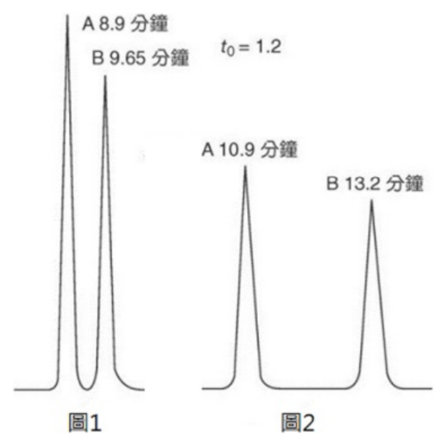
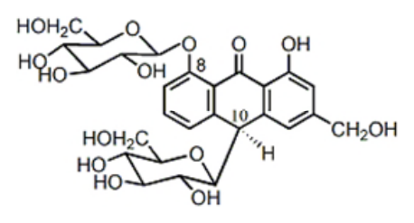
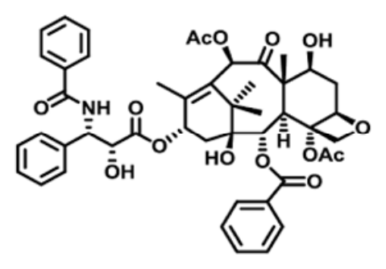
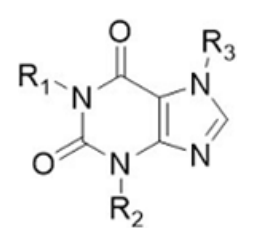

開卷有益 ／
藥師 ／ 藥物分析與生藥學 ／ 115 年115 年藥師藥物分析與生藥學試題與答案
這一頁是民國 115 年藥師藥物分析與生藥學的整份歷屆試題，共 80 題，題目與標準答案出自考選部「國家考試試題及測驗式試題答案」開放資料，其中 78 題附有詳解。以下逐題列出題幹、選項與答案；要計時作答或記錄成績，請用線上練習。
考選部原始場次代碼：115020
線上作答這一科 →
全部 80 題
第 1 題
新鮮配製之費氏試劑（Karl Fischer reagent）200 mL，含13 g 碘及過量SO2，則每1 mL 約相當於多少水？
（A） 1 mg（B） 5 mg（C） 1 g（D） 5 g答案：（B）
詳解與考點 正解：Karl Fischer 反應中 I2 與 H2O 的當量比為 1:1，因此先由碘量換算水量。I2 的莫耳數為 13 g / 253.8 g/mol = 0.0512 mol，所以 H2O 為 0.0512 mol；水的質量為 0.0512 mol × 18.0 g/mol = 0.922 g。分配至 200 mL 試劑後，0.922 g / 200 mL = 0.00461 g/mL；再換算為 0.00461 g/mL × 1,000 mg/g = 4.61 mg/mL，約為（B）5 mg 水，故選 B。
A：（A）1 mg/mL 過小。依 I2 與 H2O 的 1:1 計量關係，200 mL 試劑共約相當於 0.922 g 水，平均每 mL 不會只有 1 mg。
C：（C）1 g/mL 把 mg/mL 的量級放大為 g/mL；若為此數值，200 mL 試劑需相當於 200 g 水，與計算出的 0.922 g 不符。
D：（D）5 g/mL 同樣將單位錯置為 g/mL，且比正確值大約 1,000 倍，並非由當量計算可得。
本題考點：Karl Fischer 化學計量（Karl Fischer stoichiometry）——以 I2 與 H2O 的 1:1 莫耳當量關係，把碘量轉為水量；滴定度（titer）——題目問每 mL 相當水量時，總當量算出後必須再除以試劑體積；單位換算（unit conversion）——由 g/mL 轉成 mg/mL 要乘以 1,000，量級檢查可排除 g/mL 誘答。
第 2 題
利用費氏滴定法（Karl Fischer titration）進行無色檢品的滴定，其達滴定終點時呈現何種顏色？
（A） 深藍（B） 墨綠（C） 淡黃（D） 琥珀答案：（D）
詳解與考點 正解：無色檢品的 Karl Fischer 滴定終點，是水已反應完而出現並持續存在少量游離 I2 的時點；游離碘使溶液呈（D）琥珀色，故選 D。
A：（A）深藍色是碘與澱粉形成複合物時的顏色，並非 Karl Fischer 試劑以游離碘判讀的視覺終點。
B：（B）墨綠色不是游離 I2 在此滴定條件下的特徵終點色，不能作為水分已完全反應的判據。
C：（C）淡黃色表示碘色尚不夠穩定或接近終點；視覺終點要求碘過量造成的琥珀色能持續存在。
本題考點：Karl Fischer 視覺終點（Karl Fischer visual endpoint）——無色檢品滴定至水耗盡後，判斷游離 I2 的琥珀色是否持續；碘的顯色（iodine color）——區分游離碘的琥珀色與碘-澱粉複合物的深藍色，兩者的用途不同；終點與當量點（endpoint versus equivalence point）——視覺終點以可觀察且持續的微量試劑過量判定。
第 3 題
某溶液含有6.6×10 -2 M sodium acetate 及3.3×10-2 M acetic acid，則此溶液之pH 值約為多少？（acetic acid 之pKa 為4.74）
（A） 5.04（B） 4.47（C） 9.53（D） 8.96答案：（A）
詳解與考點 正解：此為 acetate/acetic acid 緩衝液，適用 Henderson-Hasselbalch equation：pH = pKa + log([A-]/[HA])。代入濃度比，6.6 × 10^-2 M / 3.3 × 10^-2 M = 2；因此 pH = 4.74 + log 2 = 4.74 + 0.301 = 5.041，約為（A）5.04，故選 A。
B：（B）4.47 低於 pKa，但本題共軛鹼 acetate 的濃度是酸的 2 倍，pH 應高於 pKa，不應低於 pKa。
C、D：（C）9.53 與（D）8.96 都把緩衝液誤判成強鹼性溶液。這兩個 pH 需要遠大於 2 的 [A-]/[HA] 比值，與題目給定的濃度不符。
本題考點：Henderson-Hasselbalch equation——弱酸緩衝液以 pH = pKa + log([A-]/[HA]) 計算，先確認酸與共軛鹼的身分；緩衝液方向判讀（buffer direction）——當 [A-] 大於 [HA] 時，pH 必高於 pKa；濃度比（concentration ratio）——兩者同用 M 時可直接相除，比例為 2 對應 log 2 = 0.301。
第 4 題
以重量分析法進行次硝酸鉍（bismuth subnitrate）之定量時，係將其熾灼為下列何者再稱量之？
（A） (BiO)2CO3（B） BiO2（C） Bi2O3（D） Bi(OH)3答案：（C）
詳解與考點 正解：次硝酸鉍在重量分析前經熾灼會分解並轉為組成穩定、適於稱量的 bismuth(III) oxide；（C）Bi2O3 是最終稱量形式，故選 C。
A：（A）(BiO)2CO3 是鹼式碳酸鉍相關化合物，不是次硝酸鉍熾灼定量所取得的穩定氧化物形式。
B：（B）BiO2 不是此重量分析法採用的稱量產物。熾灼後應以價態穩定的 Bi2O3 作為定量依據。
D：（D）Bi(OH)3 在加熱下會脫水形成氧化物，故不能作為熾灼完成後的最終稱量形式。
本題考點：重量分析（gravimetric analysis）——沉澱或原料經處理後必須轉成組成固定、熱穩定且可精確稱量的形式；熾灼轉化（ignition conversion）——遇到氫氧化物或鹼式鹽時，要判斷加熱後是否脫水或分解為氧化物；鉍的重量形式（bismuth gravimetric form）——次硝酸鉍定量的稱量終點是 Bi2O3，而非中間的鹽或氫氧化物。
第 5 題
下列有關澱粉指示劑的敘述，何者錯誤？
（A） 澱粉粒於熱水中崩解，產物之一為β-amylose（B） 溶液中有高濃度碘存在時，須待黃色幾乎消失時，才可加入指示劑（C） 在弱酸性環境中有較佳的靈敏度（D） 最適合之反應溫度為30℃答案：（D）
詳解與考點 正解：澱粉-碘複合物在較高溫時穩定性與顯色靈敏度都會下降，因此（D）最適合之反應溫度為 30℃ 不正確；碘量法通常在較低、適宜的溫度下判讀終點，故選 D。
A：（A）敘述澱粉粒在熱水中膨潤、崩解並釋出 β-amylose，符合澱粉指示劑配製時形成可顯色組分的原理。
B：（B）高濃度碘會使澱粉-碘複合物的變化遲滯，故應待溶液黃色幾乎消失、接近終點時再加入澱粉指示劑。
C：（C）在弱酸性環境中，澱粉指示劑的顯色較靈敏；過強酸或偏鹼條件則不利於碘與澱粉複合物的穩定判讀。
本題考點：澱粉-碘複合物（starch-iodine complex）——碘量滴定的藍色顯色依複合物形成，終點判讀要避免高碘濃度時過早加入；溫度效應（temperature effect）——溫度升高會削弱複合物的穩定顯色，不能把較暖的條件當作最佳溫度；酸鹼條件（pH condition）——弱酸性有利靈敏判讀，過強酸或鹼性會造成指示劑表現失準。
第 6 題
關於毛細管電泳（CE）法中分析物電泳淌度（electrophoretic mobility）的敘述，下列何者錯誤？
（A） 係分析物在毛細管電泳系統中的移動能力（B） 可透過添加有機溶劑去改變（C） 可調整緩衝溶液pH 值去改變（D） 可依施加電壓去改變答案：（D）
詳解與考點 正解：electrophoretic mobility 是分析物電泳速度除以電場強度的比值；增加施加電壓會使遷移速度改變，但在其他條件固定且未發生過熱時，不會改變此內在淌度。因此（D）可依施加電壓去改變 electrophoretic mobility 錯誤，故選 D。
A：（A）係分析物在毛細管電泳系統中的移動能力正確。淌度用來表達帶電分析物在單位電場下移動的能力。
B：（B）可透過添加有機溶劑去改變正確。有機溶劑可改變黏度、介電常數與溶劑化狀態，進而影響淌度。
C：（C）可調整緩衝溶液 pH 值去改變正確。pH 會改變分析物的解離程度與有效電荷，因而改變其電泳淌度。
本題考點：電泳淌度（electrophoretic mobility）——以遷移速度除以電場強度表示，須與單純的遷移速度分開判讀；毛細管電泳（capillary electrophoresis，CE）——分析物的電荷、大小與介質黏度共同影響淌度；pH 與解離（pH-dependent ionization）——改變緩衝液 pH 會改變有效電荷，是調整分離選擇性的常用方法。
第 7 題
下列有關層析法之敘述，何者錯誤？
（A） 鹼性分析物的滯留時間與動相中緩衝液的pH 值無關（B） 依固定相之極性可分為正相與逆相層析（C） 分配係數會影響其滯留時間（D） 逆相層析法可用於分析中極性化合物答案：（A）
詳解與考點 正解：鹼性分析物的解離狀態會隨動相 pH 相對於 pKa 的關係改變，進而改變與固定相的作用與滯留時間；（A）鹼性分析物的滯留時間與動相中緩衝液的 pH 值無關錯誤，故選 A。
B：（B）依固定相之極性可分為正相與逆相層析正確。正相固定相較極性，逆相固定相較非極性。
C：（C）分配係數會影響其滯留時間正確。分析物越偏向固定相，通常滯留越久。
D：（D）逆相層析法可用於分析中極性化合物正確。藉由選擇適當固定相、動相組成與 pH，逆相系統可處理中極性分析物。
本題考點：pH 對層析滯留的影響（pH effect on chromatographic retention）——可解離分析物要先比較 pH 與 pKa，再推估帶電比例與滯留變化；正相與逆相層析（normal-phase and reversed-phase chromatography）——以固定相極性為分類基準，不是只按分析物名稱分類；分配係數（partition coefficient）——固定相與動相間的分配傾向會決定保留程度與滯留時間。
第 8 題
下列各類化合物，何者最不適合以非水鹼滴定法分析？
（A） 羧酸（B） 烯醇（C） 酚（D） 四級銨鹽答案：（D）
詳解與考點 正解：非水鹼滴定法要測定的是可把質子轉移給強鹼的酸性分析物；（D）四級銨鹽的氮原子永久帶正電，沒有可供此滴定反應移轉的酸性質子，最不適合，故選 D。
A：（A）羧酸具有可解離的羧基質子，可在適當非水溶媒中以強鹼滴定。
B：（B）烯醇具有較弱的酸性，但非水溶媒可提升弱酸與強鹼反應的可辨識性，仍可作為分析對象。
C：（C）酚也屬弱酸；選擇適當溶媒與鹼性滴定劑可使其酸性質子用於非水鹼滴定。
本題考點：非水鹼滴定（nonaqueous alkalimetry）——先找分析物是否有可移轉的酸性質子，再選擇能放大弱酸反應的溶媒與強鹼；溶媒效應（solvent effect）——弱酸在水中解離不足時，可用非水溶媒改善滴定終點；四級銨鹽（quaternary ammonium salts）——氮原子已四取代且永久帶正電，不能把它當成可由鹼滴定的酸性官能基。
第 9 題
測定黏度時，下列敘述何者正確？
（A） 純液體之黏度常隨溫度而變化，溫度愈高黏度愈大（B） 通常絕對黏度之單位以厘斯（centistoke）表示之（C） 液體之運動黏度為其絕對黏度乘以該液體同溫度時之密度所得之積（D） 室溫下，水比乙醚自毛細管流下所需的時間長答案：（D）
詳解與考點 正解：在相同毛細管與溫度下，液體黏度越高，流下所需時間越長；室溫的水比乙醚黏，因此（D）水比乙醚自毛細管流下所需的時間長正確，故選 D。
A：（A）把液體黏度與溫度的方向寫反。一般純液體升溫後分子間作用較易被克服，黏度會下降。
B：（B）centistoke 是運動黏度的單位，不是絕對黏度的單位；絕對黏度通常以 poise 或 centipoise 表示。
C：（C）運動黏度為絕對黏度除以同溫度密度，即 ν = η / ρ，不是兩者相乘。
本題考點：毛細管黏度測定（capillary viscometry）——其他條件相同時，流下時間較長代表黏度較高；溫度與液體黏度（temperature dependence of liquid viscosity）——液體升溫通常黏度下降，測定時須控制溫度；絕對與運動黏度（dynamic and kinematic viscosity）——以 ν = η / ρ 區分，centistoke 對應運動黏度而非絕對黏度。
第 10 題
下列何者之濃溶液於鑑定試驗時，加入氯化鐵試液，即呈現紫堇色？
（A） 水楊酸鹽（salicylate）（B） 草酸鹽（oxalate）（C） 過氧化氫（hydrogen peroxide）（D） 甲醛（formaldehyde）答案：（A）
詳解與考點 正解：salicylate 具有鄰位酚性羥基與羧酸相關結構，可與 Fe3+ 形成有色配位複合物；（A）水楊酸鹽加入氯化鐵試液呈紫堇色，故選 A。
B：（B）草酸鹽雖可與金屬離子配位，但不會在此鑑定試驗中產生水楊酸鹽特有的紫堇色。
C：（C）過氧化氫主要涉及氧化還原反應，缺乏形成紫堇色 ferric-salicylate 複合物所需的酚性配位結構。
D：（D）甲醛不具有可與 Fe3+ 形成該紫堇色配位複合物的酚性羥基結構。
本題考點：氯化鐵鑑定（ferric chloride test）——看到酚性羥基時，可考慮與 Fe3+ 形成有色配位複合物；水楊酸鹽（salicylate）——鄰位羥基與羧酸相關結構使其成為 ferric chloride 試驗的代表性陽性物；定性顯色反應（qualitative color reaction）——判斷顏色前先比對分析物是否具可配位的官能基，不可只看是否含氧。
第 11 題
下列何種揮發油成分的比重大於1.0？
（A） 香葉醇（geraniol）（B） 香茅醛（citronellal）（C） 檸檬醛（citral）（D） 苯甲醛（benzaldehyde）答案：（D）
詳解與考點 正解：揮發油成分中，芳香族醛（D）benzaldehyde 的比重大於 1.0；其物理性質與多數開鏈單萜類揮發油成分不同，故選 D。
A：（A）geraniol 為開鏈單萜醇，比重小於 1.0，不符合題目條件。
B：（B）citronellal 為開鏈單萜醛，比重小於 1.0，不能作為答案。
C：（C）citral 雖也是醛類，但屬開鏈單萜醛，比重仍小於 1.0；分辨關鍵在芳香族 benzaldehyde 與單萜醛的差異。
本題考點：揮發油比重（specific gravity of volatile oils）——比較成分時要以相對水的密度判讀，不可只按是否含氧分類；benzaldehyde（苯甲醛）——芳香族醛的比重可大於 1.0，是與常見單萜醇、單萜醛的辨識點；單萜類揮發油成分（monoterpene volatile-oil constituents）——geraniol、citronellal、citral 雖官能基不同，均屬比重小於 1.0 的常見開鏈單萜成分。
第 12 題
已知中和松香（rosin）1.10 克需0.110 N 氫氧化鈉28.0 毫升，則其酸價約為多少？
（A） 157（B） 173（C） 143（D） 129答案：（A）
詳解與考點 正解：酸價以中和 1 g 樣品所需的 KOH 毫克數表示，須先把 NaOH 的滴定量換成當量。0.110 N = 0.110 meq/mL，0.110 meq/mL × 28.0 mL = 3.08 meq。以 KOH 的當量重 56.1 mg/meq 換算，3.08 meq × 56.1 mg/meq = 172.8 mg KOH；再除以松香 1.10 g，酸價 = 172.8 mg KOH / 1.10 g = 157.1 mg KOH/g，約為 157，故選 A。
B：173 是 1.10 g 松香所消耗的 KOH 總量約 172.8 mg，漏掉酸價必須換算成每克樣品的除法。
C：143 是把 0.110 N 誤讀為 0.100 N 所得的結果：0.100 meq/mL × 28.0 mL = 2.80 meq，2.80 meq × 56.1 mg/meq ÷ 1.10 g 約為 143。分辨關鍵在 N 已表示當量濃度，不能把 NaOH 的量直接當成酸價。
D：129 同樣不是完整代入酸價公式所得的數值；滴定體積 28.0 mL、當量濃度 0.110 N、KOH 當量重 56.1 mg/meq 與樣品質量 1.10 g 四項都必須保留，任一項漏代或誤代都收斂不到 157 mg KOH/g。
本題考點：酸價（acid value）——先將鹼液用量換成相當的 KOH 質量，再以樣品質量標準化為 mg KOH/g；當量濃度（normality）——酸鹼滴定遇到 N 時先按 meq 計算，可避免把滴定劑分子量誤帶入；單位分析（dimensional analysis）——最終酸價的單位應為 mg KOH/g，算式若不能收斂到此單位即須重查。
第 13 題
在烯烴的 1H NMR 圖譜中，trans 位向雙氫原子的偶合常數為多少Hz？
（A） 12～18（B） 6～10（C） 3～5（D） 1～2答案：（A）
詳解與考點 正解：烯烴相鄰雙鍵氫的偶合常數受二面角影響，trans 構型接近 180° 時偶合最大，典型 J 值為 12～18 Hz，故選 A。
B：6～10 Hz 較接近 cis 烯烴氫的 vicinal coupling 範圍。兩者都屬雙鍵相鄰氫而容易混淆，分辨關鍵是 trans 的 J 值明顯較大。
C：3～5 Hz 屬較小的偶合，較不符合 trans 雙鍵兩端氫的強 vicinal coupling。
D：1～2 Hz 更接近很小的長程偶合或部分 geminal coupling，不是 trans 烯烴的典型訊號。
本題考點：烯烴偶合常數（alkene coupling constant）——先判雙鍵氫為 cis 或 trans，trans 通常取較大的 J 值；Karplus 關係（Karplus relationship）——vicinal coupling 以二面角判讀，接近 180° 的構型通常比接近 0° 的構型偶合更大。
第 14 題
下列何種方法可應用於測定待測物之pKa 數值？
（A） 螢光光譜法（B） 紫外光－可見光光譜法（C） 拉曼光譜法（D） 質譜法答案：（B）
詳解與考點 正解：待測物的酸、鹼形式若在紫外光區有不同吸收，便可量測不同 pH 下的吸光度，以酸鹼兩形式濃度相等的轉折位置求得 pKa；在 pH = pKa 時兩形式濃度相等，因此紫外光－可見光光譜法可作為標準的光譜滴定方法，故選 B。
A：螢光光譜法只有在待測物本身具螢光，且螢光會隨質子化狀態改變時才可設計成 pKa 測定法，並非題目所問的通用常規方法。
C：拉曼光譜主要觀察分子振動，雖可研究化學狀態，卻不以吸光度對 pH 的酸鹼平衡曲線作為常規 pKa 測定。
D：質譜法的離子強度會同時受游離源與儀器條件影響，不能直接以訊號強度取代溶液中的酸鹼平衡常數。
本題考點：分光光度滴定（spectrophotometric titration）——酸、鹼兩形式的吸收不同時，作吸光度對 pH 曲線可找出 pKa；Henderson-Hasselbalch 關係（Henderson-Hasselbalch equation）——兩形式濃度相等時 pH = pKa，可作為光譜滴定的判讀錨點；方法適用性（method applicability）——具特定螢光性質的化合物可用螢光法，但不能把特例當成一般測定法。
第 15 題
關於大氣壓化學游離法（APCI）的敘述，下列何者錯誤？
（A） 分析物在游離前，必須先氣化（B） 離子化過程會先產生如H3O +和N2 +，再將其電荷轉移到分析物（C） APCI 在藥物分析的使用普及度較電灑法（ESI）低（D） APCI 較適用於分析高極性的化合物答案：（D）
詳解與考點 正解：本題問錯誤敘述，關鍵在 APCI 的分析物必須先霧化、氣化，再由電暈放電形成的試劑離子進行氣相離子化；它較適合可揮發、熱穩定且低至中等極性的分子。高極性化合物通常較適合 ESI，因此（D）把適用性顛倒，故選 D。
A：APCI 的加熱霧化器先讓液相流出物形成氣相分析物，這是其游離前必要的步驟，故此敘述正確。
B：電暈放電先在溶劑與氣體中形成如 H3O+、N2+ 等試劑離子，再以質子轉移或電荷轉移使分析物成離子，故此敘述正確。
C：ESI 對高極性與較大分子特別實用，在藥物分析中的使用確實較 APCI 普及，故此敘述正確。
本題考點：大氣壓化學游離（atmospheric pressure chemical ionization, APCI）——先判分析物能否氣化且是否為低至中等極性，再決定 APCI 是否合適；電灑游離（electrospray ionization, ESI）——高極性、非揮發或大分子較優先考慮 ESI，因其可由溶液直接形成帶電液滴；游離機轉（ionization mechanism）——APCI 的試劑離子先形成、再把電荷轉給分析物，不能與 ESI 的帶電液滴機轉混用。
第 16 題
下列有關折光率測定之敘述，何者最不適當？
（A） 於20℃時，蒸餾水之折光率為1.3330（B） 理論之正確度可達±0.0001（C） 測定時只能使用阿培氏折射計（D） 光線在兩種密度不同之介質間穿越時，因速度之變更而產生光之折射現象答案：（C）
詳解與考點 正解：折光率測定可使用的儀器不只阿培氏折射計，數位式與其他型式的折射計也能依臨界角或折射角原理測定。因此（C）的「只能」與實際方法不符，為最不適當敘述，故選 C。
A：20℃ 蒸餾水的折光率約為 1.3330，是折光率測定常用的基準數值，故此敘述適當。
B：在恆溫、校正與適當儀器條件下，折光率測定可達 ±0.0001 的量級，故此敘述適當。
D：光進入折光率不同的介質時傳播速度改變，因而改變行進方向並產生折射，故此敘述適當。
本題考點：折光率測定（refractometry）——判斷儀器敘述時先看是否符合折射或臨界角原理，不可把常用機型誤當成唯一機型；溫度控制（temperature control）——折光率隨溫度變化，報告與比較數值時須先確認測定溫度；臨界角（critical angle）——樣品與稜鏡折光率不同時，以臨界角定位可換算折光率。
第 17 題
下列何者對於物質之鑑別效果最佳？
（A） UV-Vis spectrophotometry（B） Raman spectroscopy（C） fluorescence spectrophotometry（D） atomic absorption spectrophotometry答案：（B）
詳解與考點 本題經考選部公告一律給分。作答任一選項皆得分。原因是題幹未定待鑑別物類型，也未定義「最佳」的判準。（B）Raman spectroscopy 對分子有振動指紋；（D）atomic absorption spectrophotometry 對元素有特徵吸收線。目標不同，各自可能成立，題幹無法定唯一判準，故送分。
A：UV-Vis spectrophotometry 可用吸收峰鑑別，但帶寬且易重疊，不是一律最佳法。
B：Raman spectroscopy 提供與化學鍵及分子骨架相關的振動指紋；若限定分子化合物的結構鑑別，（B）合理。
C：fluorescence spectrophotometry 對可螢光分析物可有高靈敏度與選擇性，但不適用所有物質，且不必然最佳。
D：atomic absorption spectrophotometry 以元素特徵原子吸收線辨識與定量，對元素具選擇性，但不能提供有機分子完整結構。待測物若為元素，（D）便可能成立。
本題考點：分析選擇性與鑑別能力（analytical selectivity and identification）。先鎖定待測物層級：分子結構優先看振動光譜，元素身分看原子光譜；光譜指紋（spectral fingerprinting）。Raman spectrum 的峰位組合可協助分子鑑別，仍須配合題目限定的分析目標。
第 18 題
在質譜儀中，下列何者之離子最不易產生重排反應？
（A） 長鏈脂肪酸（B） 對甲基苯乙酸（C） 環己烯衍生物（D） 多氯聯苯答案：（D）
詳解與考點 正解：質譜中的重排常需要可遷移氫、可形成穩定過渡態，或具有可重新分配的脂肪族骨架。多氯聯苯以兩個芳香環為主、氯取代度高且缺少易遷移的脂肪族氫，較傾向直接斷鍵而非骨架重排，故選 D。
A：長鏈脂肪酸含羧基與適當位置的氫時，可經六員環過渡態發生 McLafferty rearrangement，因此不屬最不易重排者。
B：對甲基苯乙酸具有苄位側鏈與羧酸官能基，裂解後可形成共振穩定的離子並伴隨重排途徑，故較可能出現重排。
C：環己烯衍生物具有烯丙基位置與環狀骨架，可發生烯丙基重排或環裂解相關反應，故不如多氯聯苯穩定。
本題考點：質譜重排（mass spectral rearrangement）——先找可遷移氫、羰基與可形成環狀過渡態的結構，具備者較易重排；McLafferty 重排（McLafferty rearrangement）——含羰基且有 γ-氫時優先考慮此重排；芳香族碎裂（aromatic fragmentation）——高度芳香化且缺少可遷移氫的骨架多以斷鍵碎裂為主，不易作脂肪族式重排。
第 19 題
進行焰火原子發射光譜法測定時，下列何者對測定值影響最小？
（A） 與陰離子形成難揮發鹽類（B） 溶液黏滯度不固定（C） 其他元素對放射光之吸收（D） 分析原子游離化答案：（C）
詳解與考點 正解：焰火原子發射光譜法量到的是受激分析原子自行放出的光，並沒有如原子吸收法般需由外加光源穿過樣品；因此其他元素對放射光的吸收不是主要的直接影響因子，故選 C。
A：陰離子若與分析元素形成難揮發鹽類，會抑制霧滴中分析物原子化，使可發射的原子數減少，對測定值影響顯著。
B：溶液黏滯度改變會影響吸入速率與霧化效率，進而改變進入火焰的分析物量，故不能忽略。
D：分析原子游離化會使中性基態原子比例下降，並改變受激原子族群，對發射強度有明顯影響。
本題考點：焰火原子發射光譜法（flame atomic emission spectrometry）——判斷干擾時先分清訊號是分析原子自發發射，而非外加光源的吸收；化學干擾（chemical interference）——形成難揮發化合物會降低原子化效率；游離干擾（ionization interference）——火焰中原子轉成離子會改變可發射原子的比例，須以適當條件控制。
第 20 題
下列那一個化合物的 1H NMR 訊號最接近苯（benzene）上氫的訊號？
（A） CH4（B） CH2Cl2（C） CH3COCH3（D） CHCl3答案：（D）
詳解與考點 正解：苯環氫受芳香環磁各向異性去屏蔽，化學位移約在 7.27 ppm；CHCl3 的氫訊號也約在 7.26 ppm，最接近苯上氫的訊號，故選 D。
A：CH4 的氫高度受屏蔽，化學位移接近 0 ppm，與芳香環氫相差很大。
B：CH2Cl2 受兩個氯原子拉電子影響，訊號約在 5 ppm 附近，仍明顯小於苯環氫的化學位移。
C：CH3COCH3 的甲基受羰基去屏蔽，常在約 2 ppm 出現，並非芳香區訊號。
本題考點：化學位移（chemical shift）——比較 1H NMR 訊號時先判斷氫受屏蔽或去屏蔽程度，越去屏蔽者越往低場；芳香環磁各向異性（aromatic anisotropy）——苯環環流使環外氫去屏蔽，芳香氫通常落在約 7 ppm 區域；溶劑殘留峰（residual solvent peak）——CDCl3 中殘留的 CHCl3 約在 7.26 ppm，常可作芳香區比較錨點。
第 21 題
下列關於核磁共振儀的敘述，何者正確？
（A） 使用連續的無線電波（continuous wave）進行激發較脈衝波（pulsed wave）快（B） 連續的無線電波或是脈衝波都需要傅立葉轉換將訊號轉成一般可讀圖譜（C） 每個脈衝波中間需有讓激發的氫核回到基態的緩解時間（D） 用脈衝波所測得的圖譜不能使用氘代溶劑當內標答案：（C）
詳解與考點 正解：脈衝式 NMR 每次激發後都要留出 relaxation delay，使氫核的縱向磁化恢復；延遲不足會造成飽和與積分失真，因此（C）正確，故選 C。
A：continuous wave NMR 逐一掃描頻率，取得完整圖譜通常比脈衝式傅立葉轉換 NMR 慢，故不能說較快。
B：脈衝式 NMR 的自由感應衰減訊號需經傅立葉轉換成圖譜，但 continuous wave NMR 可直接隨掃頻記錄吸收訊號，兩者不都需要此步驟。
D：採脈衝波不會限制氘代溶劑的使用；氘代溶劑可減少溶劑的 1H 訊號並提供鎖場用途，化學位移參考可另設內標。
本題考點：脈衝式核磁共振（pulsed NMR）——每次脈衝後要依 T1 設定足夠的 relaxation delay，尤其定量積分時不可省略；傅立葉轉換核磁共振（Fourier transform NMR）——脈衝後先取得時域自由感應衰減，再轉成頻域圖譜；氘代溶劑（deuterated solvent）——選用氘代溶劑時看其降低溶劑 1H 干擾與提供鎖場的功能，而非激發方式。
第 22 題
以液相層析質譜儀進行單株抗體藥物的品管分析，下列那種質譜游離法最適合？
（A） 大氣壓化學游離法（APCI）（B） 電子撞擊游離法（EI）（C） 電灑法（ESI）（D） 化學游離法（CI）答案：（C）
詳解與考點 正解：單株抗體是高分子、極性高且不易氣化的生物藥品，LC-MS 需採能從溶液溫和形成多重帶電離子的游離法。ESI 可讓巨大蛋白質分散成多個電荷態，使其 m/z 落入儀器可量測範圍，故選 C。
A：APCI 需先將分析物氣化，較適合可揮發的低至中等極性小分子，不適合完整單株抗體。
B：EI 為氣相的硬游離法，通常要求揮發且耐熱的分析物，會使蛋白質嚴重裂解或無法進入氣相。
D：CI 同樣以氣相試劑離子進行游離，適用前提仍是分析物可氣化，不能解決單株抗體的非揮發性。
本題考點：電灑游離（electrospray ionization, ESI）——分析極性、非揮發或大分子時優先考慮能由溶液產生多重電荷態的 ESI；多重帶電（multiple charging）——大分子質量不變而電荷數增加時 m/z 降低，得以在一般質譜範圍內偵測；單株抗體質譜（monoclonal antibody mass spectrometry）——品管分析選游離法時先判斷分子是否可氣化，不能把小分子氣相游離法直接套用。
第 23 題
有關螢光分光光譜法之描述，下列何者最適當？
（A） 放射光（emission radiation）較入射光（incident radiation）之波長為短（B） 結構必需具有延伸性助色團（extended auxochrome）與平面鋼性結構（rigid structure）（C） 檢體濃度越高時，誤差越大（D） 溶媒性質不會影響螢光強度答案：（C）
詳解與考點 正解：螢光定量只在適當低濃度範圍內維持良好線性；濃度升高時會出現 inner-filter effect、再吸收或 concentration quenching，使誤差增大，因此（C）最適當，故選 C。
A：螢光通常先吸收較高能量的入射光，再放出能量較低的光，所以 emission radiation 的波長通常比 incident radiation 長，方向與敘述相反。
B：共軛與剛性結構常有利於螢光，但不是每種可發螢光分子都必須具有題述的 extended auxochrome；把有利條件寫成必要條件過度絕對。
D：溶媒極性、pH、黏度與淬熄物都可能改變螢光強度，因此溶媒性質不可視為無影響。
本題考點：史托克位移（Stokes shift）——判斷發射與激發波長時，螢光發射通常往較長波長移動；內濾效應（inner-filter effect）——螢光定量濃度過高時先考慮入射光與發射光被樣品吸收造成非線性；螢光淬熄（fluorescence quenching）——比較螢光強度前須控制溶媒、pH 與淬熄物，不能只看分析物濃度。
第 24 題
下列有關質譜分析的敘述，何者錯誤？
（A） 含鹼性氮原子的藥物可能在酸性溶液中帶電荷而被質譜儀偵測到（B） 帶電荷的藥物分子可進一步片段化（C） 在質譜中，藥物分子的所有碎裂片段都可以被偵測到（D） 溶劑分子有機會跟藥物分子的碎裂片段結合，產生新的離子訊號答案：（C）
詳解與考點 正解：本題問錯誤敘述，質譜中能否看見某碎裂片段還受游離效率、離子穩定性、質量範圍、離子傳輸與偵測器靈敏度影響；分子可能發生的所有碎裂不會全部變成可偵測訊號，因此（C）錯誤，故選 C。
A：含鹼性氮的藥物在酸性溶液中容易質子化而帶正電，在適當游離條件下可被質譜偵測，故此敘述正確。
B：帶電的前驅離子可在游離源或串聯質譜碰撞後進一步碎裂，形成產物離子，故此敘述正確。
D：溶劑或添加劑可與藥物或其碎片形成加合離子，例如質子化或金屬加合訊號，故此敘述正確。
本題考點：質譜偵測限制（mass spectrometric detection limits）——看到碎裂途徑不等於每個片段都能量到，須同時檢查離子形成、傳輸與偵測條件；前驅離子與產物離子（precursor ion and product ion）——需要解析結構時，以帶電前驅離子是否可再碎裂判斷是否適合 MS/MS；加合離子（adduct ion）——出現非預期 m/z 時先檢查溶劑、鹽類或添加劑是否形成加合物。
第 25 題
下列何種方法最適於測定次沒食子酸鉍（bismuth subgallate）中的鉛限量？
（A） 原子放射光譜法（AES）（B） 原子吸收光譜法（AAS）（C） 紫外光—可見光光譜法（UV-Vis）（D） 傅立葉轉換紅外光光譜法（FT-IR）答案：（B）
詳解與考點 正解：次沒食子酸鉍中的鉛屬痕量元素限量檢查，需選對 Pb 具有元素特異性且靈敏度足夠的方法。AAS 以鉛原子的特徵吸收線定量，最適於此類金屬限量測定，故選 B。
A：AES 也可作元素分析，但在鉛的痕量限量檢查上，通常不如 AAS 直接以特徵吸收線進行選擇性定量合適。
C：UV-Vis 主要量測分子或配位顯色物的電子吸收，未經特定衍生或錯合反應時，不能直接作鉛的靈敏限量測定。
D：FT-IR 適於官能基與化學鍵鑑別，對痕量 Pb 元素沒有足夠的元素專一性與靈敏度。
本題考點：原子吸收光譜法（atomic absorption spectrometry, AAS）——題目問單一金屬的痕量或限量時，先考慮其特徵原子吸收線能否提供足夠選擇性與靈敏度；元素特異性（elemental specificity）——金屬限量檢查需選直接量元素的技術，不能以一般分子光譜取代；限量試驗（limit test）——方法選擇先看偵測極限是否足以覆蓋規格濃度，而非只看能否產生訊號。
第 26 題
下列光譜分析儀器，何者之激發與偵測之光徑呈直角？
（A） UV-Vis（B） IR（C） near-IR（D） Raman答案：（D）
詳解與考點 正解：Raman 光譜量測的是樣品散射出的光，常把收光方向設在入射雷射光的 90°，以降低直接透射與鏡面反射光進入偵測器，因此激發與偵測光徑呈直角，故選 D。
A：UV-Vis 通常量測透過樣品後的光，光源、樣品與偵測器多沿同一直線配置，不是典型直角光徑。
B：IR 的常規穿透式量測也是比較入射與透過樣品的紅外光，並非以 90° 收集散射光。
C：near-IR 多以穿透、反射或光纖方式量測近紅外吸收，標準配置不以 Raman 式直角散射收光為特徵。
本題考點：拉曼散射（Raman scattering）——看到激發光與偵測光成 90° 時，優先聯想到收集散射光的 Raman 量測；透射量測（transmission measurement）——UV-Vis、IR 與 near-IR 的常規吸收量測多比較同軸入射與透射光；雜散光抑制（stray-light suppression）——直角收光可減少未改變方向的入射光直接進入偵測器。
第 27 題
有關四極柱質譜儀（quadrupole mass analyzer）的敘述，下列何者錯誤？
（A） 透過兩對正交的電極，在不同之施加電壓下，讓離子擾動而分離不同m/z 的離子（B） 屬高解析度質譜儀，可精準到小數點第三位（C） 定量準確度高，可用於測量生物檢體之藥物濃度（D） 較磁場式質譜儀（magnetic sector mass analyzer）便宜答案：（B）
詳解與考點 正解：四極柱質譜儀以射頻與直流電場選擇穩定軌跡的離子，通常提供單位解析度與良好定量能力；它不是可穩定量到小數點第三位精確質量的高解析度質譜儀，因此（B）錯誤，故選 B。
A：四極柱由兩對正交電極構成，調整施加的射頻與直流電壓可使不同 m/z 的離子呈現不同穩定性，故此敘述正確。
C：四極柱可在選擇離子監測等模式下進行靈敏且再現性良好的定量，適合生物檢體藥物濃度分析，故此敘述正確。
D：相較磁場式質譜儀，四極柱結構較簡單、成本通常較低，故此敘述正確。
本題考點：四極柱質量分析器（quadrupole mass analyzer）——判斷其能力時先記住 RF/DC 穩定軌跡篩選與單位解析度；高解析度質譜（high-resolution mass spectrometry）——需要精確質量或分子式時，不能以一般四極柱的名目質量結果取代；選擇離子監測（selected ion monitoring, SIM）——目標定量優先利用四極柱對特定 m/z 的高靈敏監測，而非要求高解析度。
第 28 題
下列質譜儀，何者最不可能提供正確的化合物分子式？
（A） 磁場式質譜儀（magnetic sector mass analyzer）（B） 四極柱質譜儀（quadrupole mass analyzer）（C） 飛行時間質譜儀（time of flight mass analyzer）（D） 傅立葉轉換式質譜儀（Fourier transform mass spectrometry）答案：（B）
詳解與考點 正解：正確分子式需要足夠的質量解析度與精確質量，以區分名目質量相同但元素組成不同的離子。一般四極柱質譜儀多為單位解析度，最不可能單靠其結果可靠地給出化合物分子式，故選 B。
A：磁場式質譜儀可提供高解析度與精確質量資訊，能用於分子式推定。
C：time of flight mass analyzer 可量到精確飛行時間並換算精確質量，適當校正下可用於分子式判定。
D：Fourier transform mass spectrometry 具有極高解析度與質量準確度，是分子式確認的有力工具。
本題考點：精確質量（accurate mass）——要從 m/z 推定分子式時，先確認儀器能否分辨微小質量差；解析度（mass resolution）——單位解析度只能區分整數質量附近的離子，通常不足以排除不同元素組成；分子式判定（molecular formula determination）——優先選高解析度、已校正的質譜資料，並與同位素分布一併判讀。
第 29 題
有關逆相HPLC 之固定相敘述，下列何者錯誤？
（A） 胺丙基矽膠（aminopropyl silica gel）為中度極性固定相，可用於界面活性劑的分析（B） 氰丙基矽膠（cyanopropyl silica gel）為中度極性固定相，可提供偶極－偶極的交互作用力（C） ODS 為常用固定相，可用於胜肽的分析（D） 辛基矽膠（C8）碳鏈長度較ODS 短，因此分析物滯留時間一定比較長答案：（D）
詳解與考點 正解：逆相 HPLC 中固定相碳鏈越短，通常提供的疏水作用越弱。C8 的碳鏈比 ODS（C18）短，分析物一般會有較短而非必定較長的滯留時間；因此（D）方向錯誤且「一定」過度絕對，故選 D。
A：aminopropyl silica gel 屬中度極性的鍵結相，可利用其極性特性處理界面活性劑等分析需求，故此敘述正確。
B：cyanopropyl silica gel 為中度極性固定相，可提供偶極－偶極交互作用，故此敘述正確。
C：ODS 是常用的疏水性固定相，可在合適移動相與條件下用於胜肽分析，故此敘述正確。
本題考點：逆相層析（reversed-phase HPLC）——比較 C8 與 C18 時先看疏水碳鏈長度，較長者通常保留較強；固定相選擇性（stationary-phase selectivity）——氰基與胺基鍵結相可提供極性或偶極交互作用，不能只按碳鏈長度判斷；絕對敘述檢核（absolute-statement check）——層析保留還受移動相、pH 與分析物性質影響，出現「一定」時須先檢查是否過度推論。
第 30 題
以ODS HPLC 分析bupivacaine（pKa 8.1），移動相為乙腈/Tris buffer（pH 8.4）＝40/60，流速1.0 mL/min，to為2.3 min，tR為17.32 min。下列何種分析條件的變動可能使樣品有更長的滯留時間？
（A） 乙腈的百分率提高到60％（B） 流速更換成0.8 mL/min（C） 升高分析溫度（D） buffer 的pH 值調整為7.4答案：（B）
詳解與考點 正解：本題問的是觀察到的滯留時間何時會變長，而非保留因子是否改變。原條件的保留因子 k = (tR - t0) / t0 = (17.32 min - 2.3 min) / 2.3 min = 6.53。流速由 1.0 mL/min 降至 0.8 mL/min 時，在其他條件不變的近似下，tR = 17.32 min × 1.0 / 0.8 = 21.65 min；k 大致不變，但樣品通過管柱所需時間變長，故選 B。
A：乙腈由 40% 提高至 60% 會增加逆相 HPLC 移動相的沖提強度，使 bupivacaine 較早洗脫，滯留時間縮短。
C：升高分析溫度通常降低移動相黏度並削弱部分疏水作用，常使分析物較快洗脫，不能作為使滯留時間更長的條件。
D：bupivacaine 為 pKa 8.1 的鹼性藥物，[B]/[BH+] = 10^(pH - pKa)。pH 8.4 時比值約為 10^0.3 = 2.0；pH 7.4 時約為 10^-0.7 = 0.20，較多帶正電的 BH+ 較親水，在 ODS 上滯留較短。
本題考點：保留因子（retention factor, k）——先用 k = (tR - t0) / t0 分開保留機轉與實際通過管柱時間，流速改變可使 tR 改變而 k 近似不變；沖提強度（elution strength）——逆相 HPLC 增加乙腈比例通常縮短滯留；鹼性藥物的游離（ionization of basic drugs）——移動相 pH 低於 pKa 時鹼性藥物較多質子化、較親水，通常在 ODS 上保留較短。
第 31 題
有關高效液相層析（HPLC）使用的檢測器之敘述，下列何者錯誤？
（A） 紫外光檢測器（ultraviolet detector）線性範圍廣，靈敏度佳，屬於通用型檢測器（B） 折射率檢測器（refractive index detector）對移動相組成相當敏感，不適合梯度沖提（C） 螢光檢測器（fluorescence detector）通常使用氙氣燈管激發，靈敏度可達到ng 等級（D） 電化學檢測器（electrochemical detector）選擇性與靈敏度都非常高，普遍使用於選擇性生物樣品分析答案：（A）
詳解與考點 正解：UV 檢測器雖有良好線性範圍與靈敏度，但只有具有適當 UV-Vis 吸收發色團的化合物能被偵測，並非通用型檢測器；因此（A）錯在把其適用性說得過廣，故選 A。
B：refractive index detector 對移動相組成與溫度很敏感，梯度沖提會造成基線大幅改變，故不適合梯度沖提。
C：fluorescence detector 可用氙氣燈作廣譜激發光源，對具螢光或可衍生螢光的化合物可達 ng 等級靈敏度，故此敘述適當。
D：electrochemical detector 對可氧化或還原的化合物有很高選擇性與靈敏度，可用於選擇性的生物樣品分析，故此敘述適當。
本題考點：UV 檢測器（ultraviolet detector）——先確認分析物是否有可吸收 UV-Vis 光的發色團，否則不能稱為通用檢測；折射率檢測器（refractive index detector）——移動相組成變動會改變基線，使用梯度沖提時應優先排除；電化學檢測器（electrochemical detector）——目標物具可氧化還原官能基時，可利用其高選擇性處理複雜生物基質。
第 32 題
下列何者不是等梯度沖提的高效液相層析系統的組成？
（A） 焰火離子偵測器（B） 層析管（C） 溶劑泵（D） 溶劑槽答案：（A）
詳解與考點 正解：等梯度沖提的 HPLC 必須由溶劑槽供應流動相、以溶劑泵送經層析管柱，再用適於液相流出物的偵測器量測。焰火離子偵測器（flame ionization detector，FID）須把可燃蒸氣送入火焰離子化，是氣相層析常用偵測器，不是此 HPLC 系統的標準組成，故選 A。
B：層析管柱內裝固定相，檢品在固定相與流動相間反覆分配而產生分離，是 HPLC 的核心分離元件。
C：溶劑泵提供穩定且高壓的流動相流速；等梯度沖提雖不改變組成，仍必須靠泵將固定組成的流動相送入管柱。
D：溶劑槽儲存流動相，供泵持續抽取；梯度或等梯度系統都需要這個供液來源。
本題考點：高效液相層析儀器組成（high-performance liquid chromatography instrumentation）——判斷元件歸屬時，先看它是否負責供液、加壓、分離或偵測液相流出物；焰火離子偵測器（flame ionization detector）——需要氣化後在火焰中離子化，遇到一般 HPLC 組成題時應優先排除。
第 33 題
下列何者不是液相層析法連續重複注入檢品或標準品希望求得之資料？
（A） 波長（B） 回收率（C） 曳尾因數（D） 管柱效率答案：（A）
詳解與考點 正解：連續重複進樣是用來從層析峰評估方法與系統的再現性，例如峰形、效率與加標分析的回收表現；檢測波長則應先依分析物的吸收特性及方法設定選定，不是由反覆注入檢品或標準品直接求得，故選 A。
B：回收率可用加標檢品反覆經過前處理與分析後計算，反映分析方法對待測物的回收程度，屬可由重複分析取得的驗證資料。
C：曳尾因數由層析峰形計算，連續進樣可觀察峰形是否穩定或因管柱、進樣系統而惡化。
D：管柱效率通常以理論板數表示，可由每次層析圖的保留時間與峰寬計算，正是系統適用性常檢視的項目。
本題考點：系統適用性（system suitability）——重複進樣後從峰形、保留與理論板數判斷系統是否穩定；分析方法回收率（recovery）——以加標檢品的實測回收量評估前處理與定量是否可靠；檢測波長選擇（wavelength selection）——先依吸收光譜與選擇性設定，不把它當作重複進樣的輸出值。
第 34 題
下列何者無法增加HPLC 管柱的效率？
（A） 較小的固定相顆粒（B） 固定相覆蓋較薄（C） 較小的固定相擴散係數（D） 固定相顆粒大小較均勻答案：（C）
詳解與考點 正解：HPLC 管柱效率可由理論板數或 HETP 判斷；固定相內的擴散愈慢，溶質愈難在固定相與流動相間迅速達到平衡，質傳阻力反而變大，不能提升效率。因此（C）固定相擴散係數較小，無法增加管柱效率，故選 C。
A：較小的固定相顆粒可減少多路徑擴散與顆粒內質傳距離，通常提高效率，但代價是管柱背壓上升。
B：固定相覆蓋較薄會縮短溶質在固定相中的傳質路徑，降低質傳阻力，因而有利於峰較窄、效率較高。
D：固定相顆粒大小較均勻可減少流路差異造成的渦流擴散，使溶質帶較不易展寬。
本題考點：van Deemter 方程式（van Deemter equation）——比較管柱條件時，判斷哪一項會降低渦流擴散、縱向擴散或質傳阻力；固定相質傳（stationary-phase mass transfer）——擴散係數下降會使平衡變慢，看到「較小擴散係數」時不要誤判成效率提升。
第 35 題
分析檢品A 與B 得到兩個逆相高效液相層析圖（1 與2），下列何種操作絕對無法由層析圖1 得到層析圖2？

（A） 更換管柱（B） 升高分析管柱溫度（C） 降低有機相比例（D） 降低流速答案：（B）
詳解與考點 正解：逆相 HPLC 的保留會受管柱、流動相比例、流速與溫度影響。升高分析管柱溫度會降低流動相黏度，並使溶質的分配偏向流動相，保留時間隨之縮短；本題層析圖 2 相對於圖 1 是波峰往後移、保留時間延長，方向與升溫的效果相反，而更換管柱、降低有機相比例、降低流速都能把保留時間往後推，故只有（B）絕對無法由層析圖 1 得到層析圖 2，故選 B。
A：更換管柱會改變固定相的選擇性，可能改變兩分析物的相對保留、解析度甚至峰序，因此可作為改變層析圖的操作。
C：在逆相 HPLC 降低有機相比例會減弱流動相的沖提力，通常延長分析物保留時間，能造成層析圖在時間軸上的變化。
D：降低流速會延長流動相通過管柱所需時間，並可能因質傳條件改變而影響峰寬與解析度，不能先行排除。
本題考點：逆相高效液相層析保留（reversed-phase HPLC retention）——判斷條件改變能否再現另一張圖時，分別追蹤有機相比例、流速、管柱與溫度對保留時間及選擇性的影響；管柱溫度效應（column temperature effect）——升溫常改變黏度與分配平衡，實際判讀必須連同峰的相對保留與解析度一起看。
第 36 題
下列何者不是TLC 常用之固定相？
（A） 聚矽氧烷（polysiloxane）（B） 矽膠G（silica gel G）（C） 纖維素（cellulose）（D） 矽藻土G（kieselguhr G）答案：（A）
詳解與考點 正解：TLC 的固定相通常是塗布於平板上的吸附劑或分配介質，例如矽膠、纖維素與矽藻土。聚矽氧烷（polysiloxane）主要作為氣相層析的液態固定相，並非 TLC 常用固定相，故選 A。
B：矽膠 G（silica gel G）含黏著劑，可製成均勻塗層，是正常相 TLC 最常見的固定相之一。
C：纖維素（cellulose）可作為分配型 TLC 的固定相，特別適合較親水性化合物的分離。
D：矽藻土 G（kieselguhr G）可用於 TLC 平板，能作為吸附或承載固定相的材料。
本題考點：薄層層析固定相（thin-layer chromatography stationary phase）——先辨認材料是否能塗布成平板上的吸附或分配介質；聚矽氧烷固定相（polysiloxane stationary phase）——看到此類矽氧烷時優先聯想到氣相層析，而不是一般 TLC 平板。
第 37 題
將hydrocortisone 與hydrocortisone acetate 點在矽膠TLC 片上，在二氯甲烷／乙醚／甲醇／水（77： 15：8：1.2）中展開。若hydrocortisone acetate 之Rf 值為0.51，則hydrocortisone 之Rf 值最可能為下 列何者？
（A） 0.20（B） 0.60（C） 0.50（D） 0.05答案：（A）
詳解與考點 正解：矽膠 TLC 屬極性固定相；hydrocortisone 的游離羥基比 hydrocortisone acetate 多，極性較強、與矽膠作用較強，因此 Rf 應低於 hydrocortisone acetate 的 0.51。在題示展開系統中，0.20 最符合這個保留方向，故選 A。
B：0.60 高於 0.51，代表比 hydrocortisone acetate 移動得更遠，與 hydrocortisone 較極性、較易被矽膠滯留的關係相反。
C：0.50 幾乎與 hydrocortisone acetate 相同，沒有反映少了 acetyl 基後極性增加所應有的較強保留。
D：0.05 雖然方向較低，但把同一甾體骨架僅因少一個 acetyl 基的差異推到幾乎不移動，與此展開系統的相對保留不符。
本題考點：正常相 TLC（normal-phase TLC）——固定相為極性矽膠時，極性較高者通常 Rf 較低；醯化與極性（acetylation and polarity）——把羥基醯化會降低極性並提高在矽膠板上的遷移傾向，判斷時先比官能基數目與可形成氫鍵的能力。
第 38 題
在毛細管電泳法中，分析物之遷移主要依靠下列何者？①電荷泳動力（electrophoretic mobility） ②電 滲透流（electro-osmotic flow） ③毛細現象
（A） ①③（B） 僅③（C） ②③（D） ①②答案：（D）
詳解與考點 正解：毛細管電泳中分析物的遷移速度由自身的電荷泳動力（electrophoretic mobility）與毛細管內的電滲透流（electro-osmotic flow）共同決定；毛細現象不是主要驅動力。因此①、②都成立，故選 D。
A：納入①、③，但③毛細現象只是液體在細管中的表面張力效應，不能取代外加電場造成的遷移。
B：只保留③，忽略分析物帶電後在電場中產生的電荷泳動，也忽略緩衝液的整體電滲透流。
C：雖納入②電滲透流，卻以③取代①；分離選擇性仍須依分析物自身的電荷泳動力而來。
本題考點：毛細管電泳遷移（capillary electrophoresis migration）——先把分析物自身的電荷泳動與緩衝液整體的電滲透流相加判斷遷移方向；電荷泳動力（electrophoretic mobility）——比較帶電分析物時看電荷與大小對電場響應的差異，不用毛細現象解釋分離。
第 39 題
有關氣相層析法之敘述，下列何者錯誤？
（A） 毛細管柱比填充管柱的樣品承載量低（B） 聚乙二醇（carbowax）管柱適合分析極性檢品（C） 通常使用氬氣作為攜帶氣體（D） 可用前置衍生法分離光學異構物答案：（C）
詳解與考點 正解：氣相層析的攜帶氣體通常選用氦氣、氫氣或氮氣等性質合適且供應常見的氣體；（C）把氬氣列為一般氣相層析通常使用的攜帶氣體，敘述錯誤，故選 C。
A：毛細管柱內徑小、固定相膜薄，可承載的樣品量本來就低於填充管柱，這是高效率與低承載量的取捨。
B：聚乙二醇（carbowax）是極性固定相，對極性檢品可提供較適當的選擇性，敘述正確。
D：以具光學活性的衍生化試劑先把鏡像異構物轉成非鏡像異構物，可在非手性管柱上利用物性差異分離，敘述正確。
本題考點：氣相層析攜帶氣體（gas chromatography carrier gas）——判斷「通常使用」時以常規攜帶氣體的惰性、效率與供應性為準，不把可偶爾使用的氣體當標準答案；手性衍生化（chiral derivatization）——鏡像異構物先轉成非鏡像異構物後，才能用一般非手性固定相分開。
第 40 題
於高效液相層析法中，有關檢品衍生化之敘述，下列何者錯誤？
（A） 柱前（pre-column）衍生化可容許的反應時間比柱後（post-column）長（B） 柱後（post-column）衍生化易受樣品中污染物的影響（C） 在柱後（post-column）衍生化中，如生成多種衍生物亦不影響檢品之定性分析（D） 將鏡像異構物衍生化成非鏡像異構物後，可使用無光學活性的層析管柱分析答案：（B）
詳解與考點 正解：HPLC 的柱後衍生化是在檢品已經通過管柱並完成分離後才反應，因此樣品中的干擾物通常已與目標峰分開；（B）把柱後衍生化說成易受樣品污染物影響，並不正確，故選 B。
A：柱前衍生化可在進入管柱前完成反應，容許的反應時間較長；柱後衍生化必須配合峰流出時間，反應時間較受限制。
C：柱後衍生化時，檢品的保留時間已在衍生化前決定；即使產生多種衍生物，通常不會改變以原檢品保留時間為基礎的定性判斷。
D：鏡像異構物經具光學活性的試劑衍生化後會成為非鏡像異構物，可利用其物性差異在無光學活性的管柱分離。
本題考點：柱前與柱後衍生化（pre-column and post-column derivatization）——區分兩者時先看反應發生在分離之前或之後，這決定反應時間與基質干擾的風險；手性衍生化（chiral derivatization）——把鏡像異構物轉成非鏡像異構物後，可用一般管柱建立分離。
第 41 題
下列何者是第一個利用DNA 重組技術製備的蛋白質藥物？
（A） muromonab-CD3（B） insulin（C） pepsin（D） interferon alfa-2a答案：（B）
詳解與考點 正解：以 DNA 重組技術製備的第一個蛋白質藥物是 human insulin；它以重組微生物表現人類胰島素相關蛋白，再純化供臨床使用，因此答案為 insulin，故選 B。
A：muromonab-CD3 是早期單株抗體藥物，重點在單株抗體技術與 CD3 標的，不是第一個重組 DNA 製備的蛋白質藥物。
C：pepsin 為動物胃來源的蛋白水解酶，傳統來源不是以重組 DNA 技術建立的首例。
D：interferon alfa-2a 雖可由重組 DNA 技術製備，但其藥物發展時間晚於 recombinant insulin。
本題考點：重組蛋白質藥物（recombinant protein therapeutics）——遇到「第一個」的歷史題時，區分重組表現的蛋白質與傳統動物萃取或單株抗體製程；重組 insulin（recombinant insulin）——辨認其作為人類治療性重組蛋白質藥物的代表性首例。
第 42 題
關於阿拉伯膠（acacia）之敘述，下列何者錯誤？
（A） 主成分為arabinoxylan（B） 基原植物為Acacia senegal（C） 通常稱為gum arabic（D） 可能係經由細菌作用而得到的樹膠答案：（A）
詳解與考點 正解：阿拉伯膠（acacia）的主要多醣為 arabinogalactan 類，而非 arabinoxylan；（A）把主成分說成 arabinoxylan，錯誤，故選 A。
B：Acacia senegal 是阿拉伯膠的重要基原植物，與此生藥的來源相符。
C：阿拉伯膠通常稱為 gum arabic，是其通用英文名稱。
D：樹膠可因植物受傷或病理性刺激而滲出，細菌作用可能與此類樹膠形成有關，敘述可成立。
本題考點：阿拉伯膠（acacia/gum arabic）——辨認植物膠時，先把常用名稱、基原與主要多醣一組連結；植物膠多醣分類（plant gum polysaccharides）——看到 arabinoxylan 與 arabinogalactan 時，要依生藥來源分辨，不能只因都含 arabinose 就互換。
第 43 題
下列何者不具強心作用？
（A） pheasant's eye（B） squill bulb（C） oleander（D） green hellebore答案：（D）
詳解與考點 正解：具有強心作用的生藥多含強心配醣體（cardiac glycosides）；green hellebore 的代表成分為 steroidal alkaloids，藥理重點不是正性強心作用，故選 D。
A：pheasant's eye 含有強心配醣體，可產生強心作用，不能選為不具強心作用者。
B：squill bulb 含 bufadienolide 類強心配醣體，是典型的強心生藥來源。
C：oleander 含 oleandrin 等強心配醣體，具有強心作用但也有顯著毒性。
本題考點：強心配醣體生藥（cardiac glycoside crude drugs）——先從植物來源連回 cardenolide 或 bufadienolide，判斷是否屬強心類；類固醇生物鹼（steroidal alkaloids）——雖同樣帶有類固醇骨架，但不等同於強心配醣體，應依配醣體與 lactone ring 是否存在區分。
第 44 題
下列有關∆9-tetrahydrocannabinol 藥理作用的敘述，何者正確？①可用於抑制化學療法引起之嘔吐 ②可抑 制化學療法引起之落髮 ③具止痛作用，但易引起失眠 ④可促進AIDS 病人之食慾
（A） ①②（B） ①④（C） ②③（D） ②④答案：（B）
詳解與考點 正解：Δ9-tetrahydrocannabinol 可減輕化學療法引起的噁心嘔吐，也可促進 AIDS 病人的食慾，故①、④正確。它不會抑制化學療法引起的落髮；③雖有止痛作用，但其中樞作用以鎮靜、嗜睡為主（dronabinol 的常見不良反應即為 somnolence），與「易引起失眠」方向相反，故選 B。
A：雖含①，卻納入②；落髮源於化學療法對毛囊的傷害，THC 沒有防止此不良反應的作用。
C：同時包含②與③。②錯在落髮不是 THC 的適應用途；③錯在 THC 的中樞作用是鎮靜與嗜睡，而非易引起失眠，不能作為正確敘述。
D：含有正確的④，卻仍納入錯誤的②；組合題必須全部敘述成立才可選。
本題考點：Δ9-tetrahydrocannabinol 的治療用途（therapeutic uses of Δ9-tetrahydrocannabinol）——遇到適應用途時，辨認化療相關噁心嘔吐與 AIDS 食慾不振；化學療法不良反應（chemotherapy adverse effects）——支持療法可改善特定症狀，但不把止吐或食慾刺激誤延伸成防止落髮。
第 45 題
下列生藥與其藥用部位之配對，何者正確？
（A） khat－leaf（B） ipecac－seed（C） vinca－rhizome（D） physostigma－root答案：（A）
詳解與考點 正解：（A）khat 取自 Catha edulis 的葉（leaf），其所含生物鹼集中於葉部，符合生藥與藥用部位的正確配對，故選 A。
B：ipecac 的藥用部位是根及根莖相關部分，不是 seed；分辨關鍵在其 emetine 類成分的傳統採收部位。
C：vinca 的藥用部位以葉或地上部為主，不是 rhizome；其抗腫瘤生物鹼的來源不能與根莖類生藥混淆。
D：physostigma 的藥用部位是種子，即 Calabar bean，不是 root。
本題考點：生藥藥用部位（medicinal plant part）——配對題先以葉、根、根莖、種子等植物器官逐一核對，不因植物名稱相近而推論；khat（Catha edulis）——看到此生藥時固定連結葉與其生物鹼來源。
第 46 題
下列強心配醣體，何者具有doubly unsaturated 6-membered lactone ring？
（A） glucoscillaren A（B） K-strophanthoside（C） oleandrin（D） convallatoxin答案：（A）
詳解與考點 正解：雙不飽和六員 lactone ring 是 bufadienolide 型強心配醣體的結構特徵。glucoscillaren A 來自 squill，屬 bufadienolide，因此具有題述的 doubly unsaturated 6-membered lactone ring，故選 A。
B：K-strophanthoside 屬 cardenolide 類，帶的是單不飽和五員 butenolide ring，不符合六員環條件。
C：oleandrin 是 cardenolide 類強心配醣體，其 lactone ring 為五員而非雙不飽和六員。
D：convallatoxin 同樣屬 cardenolide 類，結構判斷點仍是單不飽和五員 lactone ring。
本題考點：bufadienolide（bufadienolide）——看到雙不飽和六員 lactone ring 時，直接連結此類強心配醣體；cardenolide（cardenolide）——看到單不飽和五員 butenolide ring 時，與 bufadienolide 依環大小及不飽和度區分。
第 47 題
Digitoxin 之四環結構（A/B/C/D）相連接關係，依序為何？
（A） trans-trans-trans（B） cis-trans-trans（C） cis-trans-cis（D） trans-cis-trans答案：（C）
詳解與考點 正解：Digitoxin 的 steroid nucleus 由 A、B、C、D 四環依序稠合，其中 A/B 為 cis、B/C 為 trans、C/D 為 cis；因此相連接關係為 cis-trans-cis，故選 C。
A：把 A/B 寫成 trans，與 Digitoxin 的 A/B cis 稠合不符。
B：雖保留 A/B cis 與 B/C trans，卻把 C/D 誤寫成 trans；分辨關鍵在 Digitoxin 的末兩環是 cis 稠合。
D：同時把 A/B 改成 trans、把 B/C 改成 cis，兩個環接關係都與 Digitoxin 不符。
本題考點：強心配醣體甾體核（cardiac glycoside steroid nucleus）——判讀結構立體化學時，按 A/B、B/C、C/D 的順序逐段確認，不把整體外形當成單一記憶；Digitoxin 環接關係（Digitoxin ring junctions）——遇到此特定配醣體時，使用 cis-trans-cis 作為三段環接的判準。
第 48 題
有關saponins 之敘述，下列何者錯誤？
（A） 具清潔劑特性（detergent properties）（B） 有溶血作用（C） 在水中會形成膠體溶液（colloidal solution）（D） sapogenins 之乙醯化（acetylation）產物，通常較不具結晶性答案：（D）
詳解與考點 正解：sapogenins 經乙醯化後常可形成較易結晶的衍生物，利於鑑別；（D）宣稱其 acetylation 產物通常較不具結晶性，錯誤，故選 D。
A：saponins 兼具親水與親脂部分，具有降低表面張力的清潔劑特性（detergent properties），敘述正確。
B：部分 saponins 可與紅血球膜中的成分交互作用而造成溶血，是其重要的生物活性與鑑別特徵。
C：saponins 在水中可形成膠體溶液（colloidal solution）並產生持久泡沫，符合其界面活性特性。
本題考點：皂苷界面活性（saponin surfactant property）——看到泡沫、膠體與溶血時，先連結皂苷的親水醣基與親脂 sapogenin；sapogenin 衍生化（sapogenin derivatization）——判斷乙醯化目的時，看其是否使衍生物較適合結晶與鑑別，而非誤認為降低結晶性。
第 49 題
水解cascaroside A（結構如下圖）之C-8 位置醣基後可得：

（A） chrysaloin（B） aloin B（C） aloe-emodin anthrone（D） chrysophanol答案：（B）
第 50 題
下列何種生藥的主要醣苷經myrosinase 水解後可得到葡萄糖與allyl isothiocyanate 產物？
（A） white mustard（B） black mustard（C） garlic（D） wild cherry答案：（B）
詳解與考點 正解：black mustard 的主要 glucosinolate 為 sinigrin，經 myrosinase 水解可釋出葡萄糖與 allyl isothiocyanate；這正是題目指定的產物組合，故選 B。
A：white mustard 的 glucosinolate 不是 sinigrin，水解產物帶有不同取代基，不能得到 allyl isothiocyanate。
C：garlic 的含硫前驅物主要由 alliinase 參與轉化而形成 allicin，酵素與產物都不是題述的芥子油苷水解組合。
D：wild cherry 含氰苷類，水解時會導向含氰產物與芳香醛相關產物，不是 allyl isothiocyanate。
本題考點：黑芥子苷（sinigrin）——看到 myrosinase 與 allyl isothiocyanate 時，直接連結 black mustard；芥子油苷水解（glucosinolate hydrolysis）——先辨認底物上的側鏈，才能從水解產物區分不同芥子類生藥；蒜素形成（allicin formation）——garlic 使用 alliinase 路徑，不能與 myrosinase 混用。
第 51 題
下列何者屬於monounsaturated fixed oil 類，且可作為肌肉注射劑的溶劑？
（A） coconut oil（B） peanut oil（C） sesame oil（D） corn oil答案：（B）
詳解與考點 正解：（B）peanut oil 以 oleic acid 為主要脂肪酸之一，歸於 monounsaturated fixed oil，且可用作肌肉注射劑的油性溶劑，符合兩個條件，故選 B。
A：coconut oil 的脂肪酸以較高比例飽和脂肪酸為特徵，不符合 monounsaturated fixed oil 的分類。
C：sesame oil 看起來對，是因為它確為藥典常用的注射用油性溶劑；但其主要脂肪酸含有相當比例的 linoleic acid 等多不飽和脂肪酸，不屬單元不飽和固定油，題幹的兩個條件必須同時成立才可選。
D：corn oil 以 linoleic acid 等多不飽和脂肪酸為主，與 peanut oil 的單元不飽和分類不同。
本題考點：固定油脂肪酸分類（fixed oil fatty-acid classification）——先比較主要脂肪酸的飽和度，再把油脂歸入飽和、單元不飽和或多不飽和類；peanut oil（arachis oil）——同時問到 monounsaturated fixed oil 與肌肉注射劑油性溶劑時，將這兩個線索連結作答。
第 52 題
Artemether 是青蒿素（artemisinin）之methyl ether 衍生物，具有下列何種特性？
（A） 脂溶性較青蒿素高（B） 可以靜脈給藥（C） 抗瘧作用較青蒿素低（D） 對瘧原蟲（Plasmodium falciparum）的清除效果，較quinine 弱答案：（A）
詳解與考點 正解：Artemether 的 methyl ether 取代使分子極性下降，脂溶性相對 artemisinin 增加；（A）脂溶性較青蒿素高正確。較高脂溶性有利於進入寄生蟲與組織，但不代表適合製成水性靜脈注射劑。Artemether 對瘧原蟲具有快速殺滅作用，並非活性或清除效果較弱，故選 A。
B：（B）可以靜脈給藥把脂溶性與注射途徑混為一談。Artemether 較適合口服或油性肌肉注射製劑；需要靜脈投與時，水溶性較高的 artemisinin 衍生物才是相應的製劑設計。
C：（C）抗瘧作用較青蒿素低的方向不對。Artemether 保留 artemisinin 類藥物的 endoperoxide 藥效核心，methyl ether 衍生化主要改變藥物的理化性質與製劑特性，不是把抗瘧作用降為較弱。
D：（D）把 quinine 的瘧原蟲清除速度放在較有利的位置。Artemisinin 類藥物的特徵是對血中瘧原蟲有快速作用，分辨關鍵在寄生蟲清除速度，不是以 quinine 作為較強的比較基準。
本題考點：青蒿素衍生物（artemisinin derivatives）——比較衍生物時先看取代基造成的脂溶性與水溶性改變，再連到可用給藥途徑；過氧橋藥效核心（endoperoxide pharmacophore）——判斷抗瘧活性時，保留 endoperoxide 的衍生物不應被誤判為失去快速殺瘧特性。
第 53 題 待校
洋甘菊（Chamomile）已成為常用花草茶之一，下列何者為guaianolide 倍半萜類成分matricin 之結構？
答案：（D）
第 54 題
Taxol（結構如下圖）之taxane 骨架，具下列何種環系統（ring system）？

（A） 6/7/6（B） 6/8/6（C） 5/7/6（D） 5/8/6答案：（B）
詳解與考點 正解：依 Taxol 所屬 taxane 的標準三環核心判斷，其稠合環大小依序為 6/8/6；（B）6/8/6 正確。中央八員環是 taxane 骨架最具辨識性的部分，兩側各接六員環，故選 B。
A：（A）6/7/6 將中央環誤列為七員環。Taxane 的結構判讀要先找中央較大的八員環，不能只依三環相連便套用其他 diterpene 的環系統。
C：（C）5/7/6 同時把左側環與中央環的大小列錯。Taxane 核心兩端不是五員環，且中央環也不是七員環，因此不符合標準骨架。
D：（D）5/8/6 雖保留中央八員環，卻把其中一側的六員環誤作五員環。此選項看似接近，分辨關鍵仍是完整的 6/8/6 三環排列。
本題考點：taxane 骨架（taxane ring system）——看到 Taxol 類天然物時，以中央八員環與兩側六員環的 6/8/6 排列辨識；天然物骨架判讀（natural-product scaffold recognition）——環系統題要逐一核對每個環的員數，不能只因中央環相同便視為同一骨架。
第 55 題
下列何者是flavonoids 之生合成途徑中主要的中間物？
（A） ferulic acid（B） caffeic acid（C） sinapic acid（D） p-coumaric acid答案：（D）
詳解與考點 正解：flavonoids 的 C6-C3-C6 骨架由 phenylpropanoid 路徑提供 p-coumaric acid，活化為 p-coumaroyl-CoA 後再與 malonyl-CoA 縮合形成 chalcone；（D）p-coumaric acid 因此是主要的關鍵中間來源，故選 D。
A：（A）ferulic acid 是較進一步 methoxylation 的 phenylpropanoid 酸，常與 lignin 或其他酚類代謝關聯，並非 flavonoid 骨架起始縮合所需的主要前驅物。
B：（B）caffeic acid 比 p-coumaric acid 多了 hydroxylation 的變化。取代基較多不代表更早進入 flavonoid 主路徑；主幹先由 p-coumaroyl-CoA 與 malonyl-CoA 建立。
C：（C）sinapic acid 具有更高度的 methoxylation，是後續分支的酚丙烷酸型態。它不是形成基本 flavonoid 骨架時的標準核心中間物。
本題考點：黃酮類生合成（flavonoid biosynthesis）——判斷前驅物時先找 p-coumaroyl-CoA 與 malonyl-CoA 的縮合步驟；查耳酮（chalcone）——看到 C6-C3-C6 的 flavonoid 骨架時，先回推由 phenylpropanoid 與 polyketide 路徑交會形成的 chalcone。
第 56 題
有關抗癌活性成分podophyllotoxin 之敘述，下列何者正確？
（A） 主要來自Podophyllum peltatum 葉部（B） 主要活性係具有trans-lactone ring 結構（C） 具flavonolignan 架構（D） 具有止瀉作用答案：（B）
詳解與考點 正解：podophyllotoxin 的抗癌活性與其 trans-lactone ring 構型密切相關；（B）主要活性係具有 trans-lactone ring 結構正確。這類成分屬 lignan 類天然物，結構上的 lactone 立體配置是辨識活性與衍生物差異的關鍵，故選 B。
A：（A）主要來自 Podophyllum peltatum 葉部不對。Podophyllotoxin 的傳統藥用來源以地下部的根與根莖為主，不能把地上葉部當作主要採收部位。
C：（C）具 flavonolignan 架構混淆了兩類天然物。Podophyllotoxin 是 aryltetralin lignan，flavonolignan 則是 flavonoid 與 lignan 組合的不同骨架類型。
D：（D）具有止瀉作用與其藥理方向不符。Podophyllum 製劑的傳統作用偏向強烈瀉下，且 podophyllotoxin 相關成分主要因抗腫瘤與外用用途受重視，不是止瀉藥。
本題考點：podophyllotoxin（podophyllotoxin）——辨識抗癌 lignan 時，將 trans-lactone ring 視為活性結構線索；木脂素骨架（lignan scaffold）——遇到 aryltetralin 與 flavonolignan 等名稱時，先分清是否含有 flavonoid 部分，避免因字尾相近混為同類。
第 57 題
鞣質在自然界中廣泛存在，其水溶液不易與下列何項物質產生沉澱？
（A） gelatin（B） alkaloids（C） heavy metals（D） glucose答案：（D）
詳解與考點 正解：鞣質能以多酚基與蛋白質、鹼性生物鹼及金屬離子形成難溶性複合物；（D）glucose 是單醣，通常不會與鞣質形成這類沉澱，因此正確，故選 D。
A：（A）gelatin 是蛋白質，富含可與鞣質多點結合的官能基。鞣質使蛋白質沉澱的性質也是其澀味與鞣製用途的基礎。
B：（B）alkaloids 常帶鹼性氮，能與鞣質形成難溶性 tannate。這是生藥鑑別中常用來判斷鞣質存在的反應之一。
C：（C）heavy metals 可被鞣質的酚性基團配位或形成不溶性複合物。金屬鹽與鞣質的沉澱反應和 glucose 的中性、單醣性質不同。
本題考點：鞣質沉澱反應（tannin precipitation）——遇到 protein、alkaloid 或 metal ion 時，優先判斷是否能與多酚形成難溶性複合物；鞣質與蛋白質結合（tannin-protein binding）——判斷澀味與 gelatin 試驗時，核心是多點氫鍵與疏水作用造成蛋白質聚集。
第 58 題
Myrrh 係採自Commiphora molmol 植物之那一部位？
（A） 根（B） 樹皮（C） 葉（D） 果實答案：（B）
詳解與考點 正解：Myrrh 是 Commiphora molmol 樹皮受切傷後滲出的 oleo-gum-resin，乾燥後作為生藥使用；（B）樹皮正確。判斷這類樹脂類生藥時，要區分採收的植物部位與由該部位分泌出的滲出物，故選 B。
A：（A）根不是 Myrrh 的採收來源。Myrrh 並非由地下部挖取後乾燥，而是由樹幹或樹皮切口滲出的樹脂性物質收集。
C：（C）葉部不會提供題目所稱的 oleo-gum-resin。葉類生藥通常以葉片本身的組織或揮發性成分為辨識重點，與樹皮滲出樹脂不同。
D：（D）果實也不是 Myrrh 的藥用來源。果實類生藥按成熟果實或種子採收，不能與樹皮傷口形成的分泌物混同。
本題考點：沒藥（Myrrh）——遇到 Commiphora molmol 時，將來源連到樹皮切口的 oleo-gum-resin；樹脂類生藥（resinous drugs）——判斷藥用部位時，先辨認是植物器官本身還是由該器官滲出的分泌物。
第 59 題
Theophylline 之基本化學結構如下圖，其取代基為：

（A） R1=CH3, R2=R3=H（B） R1=R2=R3=CH3（C） R1=R2=CH3, R3=H（D） R1=H, R2=R3=CH3答案：（C）
詳解與考點 正解：依 theophylline 的標準 1,3-dimethylxanthine 命名判斷，兩個 methyl 分別位於 R1 與 R2，而 R3 為氫；（C）R1=R2=CH3，R3=H 正確，故選 C。
A：（A）R1=CH3，R2=R3=H 只有一個 methyl，屬單甲基 xanthine 的取代型態，不是 theophylline 的二甲基結構。
B：（B）R1=R2=R3=CH3 有三個 methyl，對應 caffeine 的 1,3,7-trimethylxanthine，而非 theophylline。
D：（D）R1=H，R2=R3=CH3 的兩個 methyl 位置不同，對應 theobromine 的 3,7-dimethylxanthine；分辨關鍵在二甲基的定位，不只是 methyl 總數。
本題考點：甲基黃嘌呤（methylxanthines）——以 N-1、N-3、N-7 的 methyl 位置區分 theophylline、theobromine 與 caffeine；系統命名判讀（systematic-name decoding）——看到 1,3-dimethyl 時，將兩個指定位置標為 CH3，未列的位置保留 H。
第 60 題
Physostigmine 保存不當會使顏色變紅，係因為水解及氧化形成何種化合物所致？
（A） rubreserine（B） eseramine（C） physovenine（D） geneserine答案：（A）
詳解與考點 正解：Physostigmine 保存不當時，先發生水解，再經氧化形成紅色的 rubreserine；（A）rubreserine 正確。題幹的「顏色變紅」是辨識這項劣變反應的直接線索，故選 A。
B：（B）eseramine 雖與 eserine 名稱相近，但不是 Physostigmine 水解—氧化後造成紅色的特徵產物。分辨關鍵在保存劣變的反應產物名稱，不是字首是否相似。
C、D：（C）physovenine 與（D）geneserine 都不是題目所述的紅色氧化產物。Physostigmine 變紅的鑑別反應固定指向 rubreserine，不能以其他相近的生物鹼名稱替代。
本題考點：Physostigmine 劣變（physostigmine degradation）——看到保存後轉紅時，連結水解與氧化形成 rubreserine；生藥保存（crude-drug storage）——判斷保存變色時，先區分是氧化、還原或水解造成的特徵產物，而非只記外觀顏色。
第 61 題
(－)-Hyoscyamine 和(－)-cocaine 之共同化學架構為：
（A） tropane（B） tropic acid（C） phenylacetic acid（D） benzoic acid答案：（A）
詳解與考點 正解：（－）-Hyoscyamine 與（－）-cocaine 都是 tropane alkaloids，兩者共享雙環含氮的 tropane 核；（A）tropane 正確。後續連接的酸性部分不同，不能因兩者都形成酯而誤判共同架構，故選 A。
B：（B）tropic acid 是 Hyoscyamine 的酯化酸性部分，不是 cocaine 的共同骨架。共同性要看兩者皆保留的含氮雙環，而不是其中一者專有的側鏈酸。
C：（C）phenylacetic acid 不構成兩者共同的基本架構。Tropane alkaloid 的分類依據是 tropane 核，並不以任一芳香酸側鏈作為共同標記。
D：（D）benzoic acid 與 cocaine 的苯甲醯基相關，但 Hyoscyamine 使用的是 tropic acid。此選項看似可由 cocaine 結構聯想，卻不能滿足「兩者共同」的條件。
本題考點：莨菪烷生物鹼（tropane alkaloids）——比較 Hyoscyamine 與 cocaine 時，先找共同的 tropane 含氮雙環核；酯型生物鹼（ester alkaloids）——兩者都有酯鍵時，仍要分開判斷醇胺骨架與各自連接的酸性部分。
第 62 題
馬錢子（Nux vomica）的主要生物鹼為：
（A） strychnine（B） eserine（C） canescine（D） emetine答案：（A）
詳解與考點 正解：馬錢子 Nux vomica 的代表性主要生物鹼是 strychnine，常與 brucine 並列；（A）strychnine 正確。題目問主要成分時，要以該生藥最具代表性的毒性與藥理標記判斷，故選 A。
B：（B）eserine 又稱 Physostigmine，來源為 Calabar bean，並非馬錢子的主要生物鹼。兩者皆是植物生物鹼，但來源植物與藥理分類不同。
C：（C）canescine 不具馬錢子主要生物鹼的代表性。馬錢子的鑑別組合是 strychnine 與 brucine，不能以其他植物的生物鹼名稱替代。
D：（D）emetine 的典型來源是 ipecac，與馬錢子不同。此選項同為天然生物鹼而看似合理，但生藥來源的配對並不相符。
本題考點：馬錢子生物鹼（Nux vomica alkaloids）——看到 Nux vomica 時，優先聯想 strychnine 與 brucine；生藥—成分配對（crude-drug constituent matching）——選項都是生物鹼時，先用來源植物作第一層排除，再核對代表性成分。
第 63 題
下列何者為bloodroot 之主要生物鹼，且會與硝酸或硫酸形成淡紅色（reddish）鹽類？
（A） sanguinarine（B） chelerythrine（C） allocryptopine（D） protopine答案：（A）
詳解與考點 正解：bloodroot 的主要生物鹼為 sanguinarine，與硝酸或硫酸形成淡紅色鹽類是其鑑別特徵；（A）sanguinarine 正確。題幹同時給來源植物與特徵顏色反應，兩項都指向同一成分，故選 A。
B：（B）chelerythrine 雖也是相近的 benzophenanthridine alkaloid，卻不是 bloodroot 最具代表性的 sanguinarine。此選項看似接近，分辨關鍵在主要來源與淡紅色鹽類的特異配對。
C：（C）allocryptopine 不符合 bloodroot 的主要成分與題示顏色反應。不能只因其名稱屬生物鹼便取代 sanguinarine 的來源鑑別。
D：（D）protopine 也是另一類 isoquinoline alkaloid，並非本題所問的 bloodroot 主成分。判斷時要把特徵鹽類反應一併納入，而非只比對是否為含氮化合物。
本題考點：bloodroot 生物鹼（bloodroot alkaloids）——以 sanguinarine 與淡紅色鹽類反應配對辨識血根；生物鹼鑑別（alkaloid identification）——遇到來源植物加顏色反應時，兩個線索必須同時吻合才可確定成分。
第 64 題
海洛因（Heroin）係下列何者之乙醯化產物？
（A） morphine（B） codeine（C） thebaine（D） narcotine答案：（A）
詳解與考點 正解：Heroin 即 diacetylmorphine，是 morphine 的兩個 hydroxyl 基經乙醯化後所得；（A）morphine 正確。從名稱中的 diacetyl 即可回推母體為具可乙醯化 hydroxyl 基的 morphine，故選 A。
B：（B）codeine 是 morphine 的甲基化衍生物，其 phenolic hydroxyl 已被 methyl 取代。它不是形成 Heroin 時所直接乙醯化的母體。
C：（C）thebaine 雖同為 morphinan 類鴉片生物鹼，但其取代型態與 morphine 不同，不是 diacetylmorphine 的前驅物。
D：（D）narcotine 又稱 noscapine，屬結構不同的 phthalideisoquinoline alkaloid。它與 morphine 同可見於鴉片，卻不具 Heroin 所需的母核與 hydroxyl 乙醯化關係。
本題考點：Heroin 結構來源（diacetylmorphine）——看到 diacetylmorphine 時，回推為 morphine 的 hydroxyl 乙醯化產物；鴉片生物鹼分類（opium alkaloids）——區分 morphinan 與 phthalideisoquinoline 時，不能只因皆來自鴉片就視為可互相衍生。
第 65 題
下列中藥之基原植物科別，何者不屬於Asteraceae（Compositae）？
（A） 蒼耳子（B） 艾葉（C） 蒼朮（D） 細辛答案：（D）
詳解與考點 正解：題目要找不屬於 Asteraceae（Compositae）的基原植物；（D）細辛屬 Asarum 類植物，歸於 Aristolochiaceae，不屬於菊科，故選 D。
A：（A）蒼耳子的基原為 Xanthium 屬，屬 Asteraceae。它是菊科果實類生藥，故不符合題目的否定條件。
B：（B）艾葉的基原為 Artemisia 屬，屬 Asteraceae。Artemisia 是菊科常見屬，與細辛的科別不同。
C：（C）蒼朮的基原為 Atractylodes 屬，同屬 Asteraceae。三個看似不同的中藥名稱在分類上同屬菊科，分辨關鍵在基原屬名而非藥材用途。
本題考點：中藥基原科別（botanical family identification）——遇到科別題時，先把藥材連回基原屬名再判斷科別；菊科藥材（Asteraceae drugs）——Xanthium、Artemisia 與 Atractylodes 可作為菊科配對線索，Asarum 則應另行排除。
第 66 題
中藥補氣藥能增強身體運作力，下列中藥依效能分類，何者不屬於補氣藥？
（A） 白扁豆（B） 黨參（C） 黃精（D） 大棗答案：（C）
詳解與考點 正解：本題按中藥效能分類，而不是只看藥材是否有補益效果；（C）黃精主要歸入補陰藥，雖可兼補脾益氣，仍不屬於本題的補氣藥類，故選 C。
A：（A）白扁豆能補脾益氣並滲濕止瀉，歸在補氣藥。其兼具祛濕作用不會改變主要效能分類。
B：（B）黨參是典型補氣藥，可補中益氣、生津養血。看到補益類藥材時，黨參是補氣組的直接辨識點。
D：（D）大棗具有補中益氣、養血安神作用，歸為補氣藥。它雖常作調和藥性或食療材料，分類上仍不是補陰藥。
本題考點：補氣藥（Qi-tonifying herbs）——以補脾益氣為主要效能的藥材歸入補氣組，即使另有祛濕或養血作用亦然；補陰藥（Yin-tonifying herbs）——黃精可兼補氣，但分類題以主要功效歸類，不以所有次要作用改變答案。
第 67 題
有關中藥甘草之敘述，下列何者錯誤？
（A） 含有生物鹼anabasine（B） 生用具有瀉火作用（C） 通行十二經，具解毒作用（D） 炙甘草常以薑為輔料進行炮製答案：（D）
詳解與考點 正解：題目問甘草敘述中錯誤者，關鍵在炮製輔料；（D）炙甘草的常規炮製是以蜂蜜蜜炙，不是以薑為輔料，因此此敘述錯誤，故選 D。
A：（A）甘草可見生物鹼 anabasine，符合其已知化學成分敘述。此項考的是成分配對，並未把甘草的主要甜味成分與生物鹼混為一談。
B：（B）生甘草偏於清熱瀉火、解毒，符合生品與炙品作用取向的差異。炮製後的炙甘草則較偏補脾益氣與緩和藥性。
C：（C）甘草在傳統本草中有通行十二經與解毒的用法記載，與其調和諸藥、緩急解毒的應用相符，因此不是錯誤敘述。
本題考點：炙甘草炮製（honey-processed licorice）——判斷炙甘草時，先抓蜜炙這一輔料與補脾益氣取向；生熟異治（processing-dependent actions）——比較生甘草與炙甘草時，要把炮製方法和主要功效方向一併配對。
第 68 題
下列何種中藥具有ligustilide 及ferulic acid 成分？
（A） Polygonati Rhizoma（B） Lycii Fructus（C） Rehmanniae Radix（D） Angelicae Sinensis Radix答案：（D）
詳解與考點 正解：ligustilide 與 ferulic acid 是 Angelicae Sinensis Radix（當歸）的代表性成分組合；（D）Angelicae Sinensis Radix 正確。前者為揮發性 phthalide 類成分，後者為酚酸類成分，合併辨識可直接連到當歸，故選 D。
A：（A）Polygonati Rhizoma 為黃精，成分辨識重點在 polysaccharides 與 steroidal saponins，不以 ligustilide 與 ferulic acid 為代表。
B：（B）Lycii Fructus 為枸杞子，常以 polysaccharides、betaine 與 carotenoids 等成分辨識。它與當歸同屬補益常用藥，卻不是相同的化學指紋。
C：（C）Rehmanniae Radix 為地黃，代表性成分偏向 iridoid glycosides，例如 catalpol。分辨關鍵在 iridoid glycosides 與當歸的 phthalide—酚酸組合不同。
本題考點：當歸成分（Angelica sinensis constituents）——看到 ligustilide 加 ferulic acid 的組合時，優先配對 Angelicae Sinensis Radix；中藥化學指紋（herbal chemical fingerprint）——以兩種以上具代表性的不同類別成分交叉辨識，可避免只憑功效相近的藥材作答。
第 69 題
紅花苷（Carthamin）為中藥紅花之主成分，其化學結構屬於：
（A） O-glycosides（B） C-glycosides（C） N-glycosides（D） S-glycosides答案：（B）
詳解與考點 正解：紅花苷 Carthamin 為 C-glycosyl quinochalcone，糖基與苷元以碳—碳鍵直接相連；（B）C-glycosides 正確。判斷苷類型時要看糖基連接原子的鍵結方式，而不是只看是否含糖，故選 B。
A：（A）O-glycosides 的糖基經氧原子與苷元相連，是許多 flavonoid 常見的型態。Carthamin 的糖苷鍵不是氧橋，因此不能因其為植物色素便歸入 O-glycosides。
C：（C）N-glycosides 以氮原子作為糖基連接位置，與 Carthamin 的碳—碳鍵結不符。此選項適用於含氮苷元的特定結構，非本題的 quinochalcone。
D：（D）S-glycosides 以硫原子連接糖基，常見於含硫天然物的分類，並非紅花苷的結構特徵。
本題考點：碳苷（C-glycosides）——糖基直接以 C-C 鍵連到苷元時判為 C-glycoside，水解穩定性通常高於 O-glycoside；苷鍵類型（glycosidic linkage）——辨析 O、N、S、C glycoside 時，逐一查看糖基實際連接的原子。
第 70 題
下列何者為中藥地黃最著名之產地？
（A） 陝西（B） 河南（C） 浙江（D） 吉林答案：（B）
詳解與考點 正解：地黃的傳統道地產區為河南懷慶一帶，常以「懷地黃」聞名；（B）河南正確。產地題問的是傳統最著名的道地來源，不是所有可能栽培地，故選 B。
A：（A）陝西雖為重要中藥產區，但不是地黃最具代表性的懷地黃產地。藥材可在多地栽培，仍須以道地藥材的歷史產區作答。
C：（C）浙江有多種著名道地藥材，卻非本題地黃的標準配對。此選項利用常見中藥產地作誘答，分辨關鍵在「懷」所指的河南。
D：（D）吉林較常與東北地區藥材聯想，並非地黃最著名的傳統產地。不能以地理區域的藥材名聲取代特定品種的道地來源。
本題考點：道地藥材（geo-authentic medicinal materials）——產地題先找藥名慣用的道地稱呼，再回推省份或地區；懷地黃（Huai Rehmannia）——看到「懷」地名線索時，將地黃配對河南懷慶地區。
第 71 題
有關中藥葛根之敘述，下列何者錯誤？
（A） 基原植物之科別為Fabaceae（B） 多為栽培，臺灣產品質優良，產量多（C） 主成分為lignans 類，具有改善心血管與腦血管循環作用（D） 為辛涼解表藥答案：（C）
詳解與考點 正解：葛根的主要活性成分是異黃酮類（isoflavones，如 puerarin、daidzein、genistein），而不是 lignans 類，把主成分講成 lignans 類是成分歸類上的錯誤，故選 C。
A：葛根的基原植物屬 Fabaceae（豆科），敘述正確。
B：臺灣多有栽培葛根，且產品品質優良、產量多，敘述正確。
D：葛根在中藥性味歸經上屬辛涼解表藥，敘述正確。
本題考點：葛根的主要活性成分（isoflavones，非 lignans）——這是葛根改善心腦血管循環等藥理作用的化學基礎；木脂素（lignans）是五味子、連翹一類中藥的特徵成分，與豆科（Fabaceae）葛根所含的異黃酮（isoflavones）屬不同類別的天然物。葛根的基原科別（Fabaceae）與性味歸經（辛涼解表）是本題另外考的兩個知識點。
第 72 題
下列何者不屬於溫裏藥？
（A） Aconiti Lateralis Radix（B） Cyperi Rhizoma（C） Foeniculi Fructus（D） Cinnamomi Cortex答案：（B）
詳解與考點 正解：溫裏藥以溫中散寒、回陽通脈為主要作用；（B）Cyperi Rhizoma 為香附，主要歸於理氣藥，不屬於溫裏藥，故選 B。
A：（A）Aconiti Lateralis Radix 為附子，性大熱，具有回陽救逆、補火助陽與散寒止痛作用，是典型溫裏藥。
C：（C）Foeniculi Fructus 為小茴香，能散寒止痛、理氣和胃，歸入溫裏藥。它也有理氣表現，但主要分類仍以溫裏散寒為準。
D：（D）Cinnamomi Cortex 為肉桂，能補火助陽、散寒止痛、溫通經脈，是溫裏藥的重要代表。與香附相比，分辨關鍵在主要功效是溫散寒邪還是疏肝理氣。
本題考點：溫裏藥（interior-warming herbs）——以溫中散寒或回陽救逆為主效者歸入溫裏組；理氣藥（Qi-regulating herbs）——香附以疏肝解鬱、理氣調經為判準，即使性味偏溫也不因此改列為溫裏藥。
第 73 題
解表藥柴胡（Bupleuri Radix）所含多醣體具有下列何種藥理作用？
（A） 中樞神經興奮（B） 抗真菌（C） 免疫調節（D） 強心答案：（C）
詳解與考點 正解：柴胡的關鍵線索是「多醣體」而非揮發油或皂苷；植物多醣常藉由影響免疫細胞及細胞激素反應而表現免疫調節作用。柴胡多醣在本題所對應的藥理作用是調整免疫反應，故選 C。
A：中樞神經興奮不是柴胡多醣的典型藥理作用。分辨關鍵在成分類型：多醣體多與免疫反應的調節相關，不能直接歸為中樞興奮成分。
B：抗真菌不是本題所問柴胡多醣的代表性藥理作用。雖然植物來源成分可能有多種生物活性，仍須依題幹指定的多醣體判斷。
D：強心作用通常須有能直接影響心肌收縮或心臟節律的特定成分依據，並非柴胡多醣的主要藥理定位。
本題考點：柴胡多醣（Bupleuri Radix polysaccharides）——題幹指定多醣體時，優先連結免疫調節而非把整味藥的其他成分作用混入；免疫調節（immunomodulation）——判斷植物多醣活性時，看其是否調整免疫細胞或發炎訊號，不以中樞或強心作用類推。
第 74 題
Honokiol 為下列何種中藥的主要成分之一？
（A） 厚朴（B） 白朮（C） 金銀花（D） 蛇床子答案：（A）
詳解與考點 正解：Honokiol 與 magnolol 是厚朴的辨識性成分組合；題幹問主要成分所屬中藥，應由這組木脂素類相關成分回推厚朴。故選 A。
B：白朮的代表性成分以 atractylenolide 類為主，與 Honokiol 的來源不同。兩者都屬常見中藥材，但成分標誌不能互換。
C：金銀花常以 chlorogenic acid 等酚酸及黃酮類成分辨識，不以 Honokiol 為主要成分。
D：蛇床子的典型成分為 osthole 等 coumarin 類，與厚朴所含的 Honokiol 不同。
本題考點：厚朴（Magnoliae Cortex）——看到 Honokiol 或 magnolol 時，直接連結厚朴；成分標誌藥材鑑別（marker-compound identification）——同為植物藥材時，以特徵成分組合區分來源，不以功效名稱猜測。
第 75 題
中藥白果所含之成分中，何者會誘發接觸性皮膚炎？
（A） ginkgotoxin（B） ginkgolide A（C） ginkgolic acid（D） ginkgetin答案：（C）
詳解與考點 正解：白果引起接觸性皮膚炎的關鍵是具致敏性的酚酸類成分 ginkgolic acid；它可造成皮膚刺激與過敏反應，故選 C。
A：ginkgotoxin 為 4′-O-methylpyridoxine，重點在干擾 vitamin B6 相關代謝而可能導致神經毒性，並非本題的接觸性皮膚炎成分。
B：ginkgolide A 屬萜類內酯成分，常與 platelet-activating factor 相關作用討論；其成分分類與皮膚致敏的 ginkgolic acid 不同。
D：ginkgetin 屬雙黃酮類成分，不能以白果所有成分皆可能刺激皮膚來推定其為致敏主因。
本題考點：白果致敏成分（ginkgolic acid）——問接觸性皮膚炎時，優先找具酚性長鏈結構的致敏成分；ginkgotoxin——問白果神經毒性或維生素 B6 拮抗時才連結此成分，勿與皮膚致敏作用混淆。
第 76 題
下列何者具有散瘀生新、和血止痛作用？
（A） Dendrobii Caulis（B） Gastrodiae Rhizoma（C） Draconis Sanguis（D） Akebiae Caulis答案：（C）
詳解與考點 正解：題幹的「散瘀生新、和血止痛」是血竭的傳統功效描述；Draconis Sanguis 為血竭，主用於化瘀、止血止痛及促進瘀傷修復，故選 C。
A：Dendrobii Caulis 為石斛，功效重點為益胃生津、滋陰清熱，並非散瘀止痛藥。
B：Gastrodiae Rhizoma 為天麻，主要用於平肝息風、止痙及頭暈頭痛，與血瘀疼痛的處理方向不同。
D：Akebiae Caulis 為木通，主要作用為利尿通淋、清心除煩及通乳，不具本題所述的和血散瘀定位。
本題考點：血竭（Draconis Sanguis）——遇到散瘀生新、和血止痛的功效組合時，連結血竭；中藥功效辨析（traditional-use differentiation）——先判斷題幹是在問活血化瘀、息風，或利水，再回推藥材來源。
第 77 題
有關中藥三七之敘述，下列何者錯誤？
（A） 基原植物之科別為百合科（B） 含ginsenoside Rb1（C） 具化瘀止血之效（D） 孕婦慎服答案：（A）
詳解與考點 正解：本題要求找出錯誤敘述。三七的基原植物為 Panax notoginseng，分類屬五加科（Araliaceae），所以（A）把科別說成百合科是錯誤；三七可化瘀止血，且孕婦須慎用，故選 A。
B：三七含有 ginsenoside Rb1 等皂苷成分，這與其屬 Panax 類藥材的成分特徵相符，故此敘述正確。
C：三七兼具化瘀與止血作用；看似相反的兩個方向其實可同時用於瘀血伴出血的情境，故此敘述正確。
D：三七具活血化瘀作用，孕婦使用須審慎評估，故此敘述正確而非本題答案。
本題考點：三七（Notoginseng Radix）——先由 Panax notoginseng 判定為五加科，再核對功效與禁忌；化瘀止血（stasis-resolving hemostasis）——遇到瘀血與出血並見時，可辨識兼具化瘀與止血的藥材，而非把兩種作用視為互斥。
第 78 題
下列何者為中藥射干抗發炎有效成分tectoridin 之化學分類？
（A） 木脂素（B） 異黃酮（C） 三萜類（D） 生物鹼答案：（B）
詳解與考點 正解：射干的抗發炎成分 tectoridin 為異黃酮配醣體，判斷時應先辨識其 flavonoid 骨架中的 isoflavone 類型，故選 B。
A：木脂素的基本結構來自 phenylpropanoid 單元偶合，與 tectoridin 的異黃酮骨架不同。
C：三萜類通常由六個 isoprene 單元構成，常見於皂苷或 triterpenoid 成分，並非 tectoridin 的化學分類。
D：生物鹼必須以含氮鹼性結構為分類核心；tectoridin 不屬此類。名稱看似專有成分時，仍應依骨架而非藥材功效分類。
本題考點：異黃酮（isoflavone）——看到 tectoridin 時，以 flavonoid 的 isoflavone 骨架判定，不以抗發炎作用反推類別；天然物骨架分類（natural-product scaffold classification）——木脂素、三萜與生物鹼應分別由 phenylpropanoid、isoprene 與含氮結構辨識。
第 79 題
功用主治為泄熱解毒，治喉癰、齦腫、痔瘡且含matrine 的清熱藥為：
（A） 山豆根（B） 黃連（C） 羌活（D） 白芷答案：（A）
詳解與考點 正解：題幹同時給出泄熱解毒、喉癰齦腫痔瘡及 matrine 三個線索；matrine 是山豆根的特徵性 quinolizidine alkaloid，因此所指清熱藥為山豆根，故選 A。
B：黃連的代表性成分為 berberine 等異喹啉類生物鹼，雖也能清熱解毒，成分線索與 matrine 不符。
C：羌活以祛風除濕、散寒止痛為主要用途，常見成分以揮發油與 coumarin 類討論，並非治喉癰的 matrine 來源。
D：白芷偏向祛風燥濕、通竅止痛，其 furanocoumarin 等成分與山豆根的 matrine 不同。
本題考點：山豆根（Sophorae Tonkinensis Radix et Rhizoma）——題幹出現 matrine 且問咽喉腫痛時，優先判為山豆根；matrine——以 quinolizidine alkaloid 作為來源藥材的鑑別標誌，不因其他藥材也有清熱功效而改判。
第 80 題
清熱藥中有涼血、活血作用，含naphthoquinones 類成分，可治痘瘡血熱毒盛及心腹邪熱者為：
（A） 紫草（B） 金銀花（C） 蘆根（D） 玄參答案：（A）
詳解與考點 正解：紫草含 shikonin 衍生物等 naphthoquinones，且功效為涼血、活血、解毒透疹；題幹的痘瘡血熱毒盛與心腹邪熱正對應紫草，故選 A。
B：金銀花以清熱解毒、疏散風熱見長，常見成分為 chlorogenic acid 等，並非本題所指的 naphthoquinones 藥材。
C：蘆根主要用於清熱生津、除煩止嘔與利尿，功效重點不在涼血活血或痘疹血熱。
D：玄參可清熱涼血、滋陰降火，但主要成分與紫草的 naphthoquinones 不同；分辨關鍵在題幹同時給出的化學成分與透疹線索。
本題考點：紫草（Lithospermi Radix）——出現涼血活血、透疹及 naphthoquinones 時，判為紫草；萘醌類（naphthoquinones）——以 shikonin 類作為紫草的成分辨識線索，不能只用「清熱」這一寬泛功效作答。
其他年度
回到藥師藥物分析與生藥學的年度總覽 ，
或到藥師題庫首頁 看其他科目。
題目與標準答案出自考選部「國家考試試題及測驗式試題答案」開放資料。依中華民國《著作權法》第 9 條第 1 項第 5 款，
依法令舉行之各類考試試題不得為著作權之標的，得自由利用。詳解為 AI 整理的學習輔助，
並非官方標準答案 ；中華民國法規會修訂，引用前請對照現行版本查證。